Основное меню (Sabor de la Vida)
🧊 Холодные закуски
Все виды устриц делятся диких и культивируемых. Диких двустворчатых моллюсков вылавливают в морях и океанах водолазным методом и поставляют к столу «как есть», без облагораживания. Поэтому их мякоть обычно более жесткая, соленая, с ярко выраженной йодистостью и изменчивым вкусом. Все это — последствия роста в глубоких водах в неконтролируемых условиях. За эту резкость и природную вариативность вкуса дикие устрицы и ценятся гурманами. Особенно ценны моллюски с плоской раковиной. Они требовательны к среде обитания, поэтому их выращивание на фермах — сложная задача. Почти все культивируемые виды устриц для еды — моллюски с глубокими раковинами чашеобразной формы. Контролируемый процесс выращивания убирает лишнюю соль, делает мясо моллюска более нежным, придает сладость. Кроме того, все виды устриц для еды вдальнейшем обладают более предсказуемым вкусом и безопаснее с точки зрения употребления в пищу сырыми. Поэтому шеф-повара ресторанов чаще выбирают для своих кулинарных шедевров именно выращенных моллюсков. Хороши они и для первых дегустаций этого морепродукта.
Устрица Императорская (Залив Петра Великого. Владивосток.)
Дикая устрица с ярко выраженным морским вкусом, богатым йодистым характером и природной свежестью.
Особенности:
🍋 цитрусы |
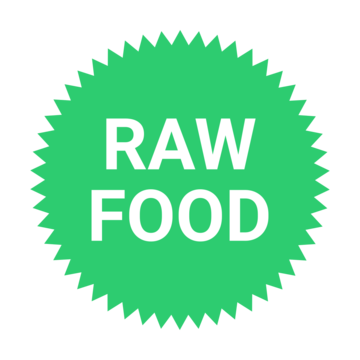
сырой |Устрицы отдаются с несрезанной ножкой (мускул, которым моллюск крепится к нижней створке раковины).
Подаются с красным винным уксусом, луком шалот и лимоном.
Имеют сплюснутую, продолговатую (вытянутую) форму что отражает их природный характер. Т.к. они дикие, в раковине могут быть неравномерно распределены, а вкус изменчивый и зависит от условий обитания устрицы (по сути гость выбирает "кота в мешке"). Он колеблется от сладковатого до сильно соленого.
Наш ресторан гарантирует свежесть каждой устрицы. Перед подачей на стол гостю ее проверяют на этапе подготовки, а также су-шефом при отдаче официанту.
{kind=link}
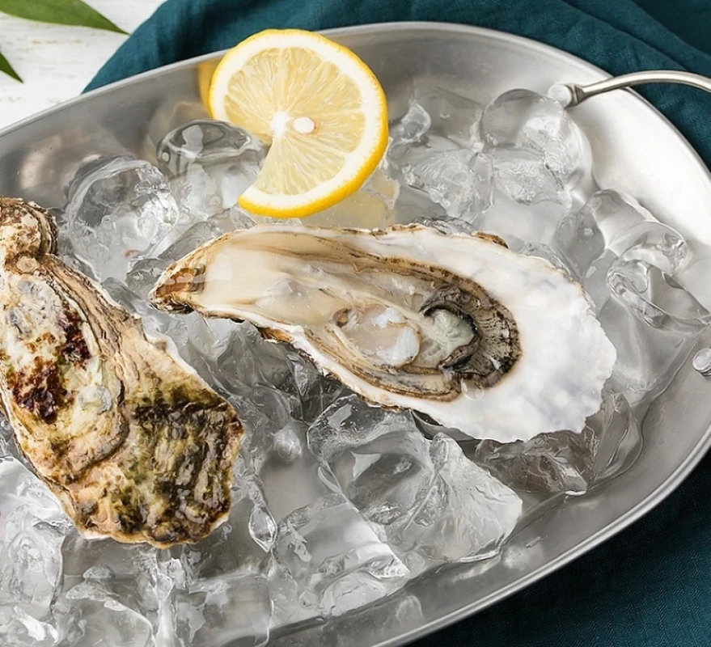
Состав:
Устрицы подаются с:
- Красным винным уксусом.
- Луком шалот.
- Лимоном.
- Гренками.
- Сливочным маслом.
Классическая подача устриц по‑европейски на плато с колотым льдом, также добавляют:
- Соус миньонет (mignonette): красный винный уксус и лук шалот (подчёркивают морскую свежесть устрицы, добавляют лёгкую кислинку и пикантность). Уксус и шалот — обладают антисептическими свойствами, помогают пищеварению, снижают риск бактериального заражения.
- Сливоное масло (смягчает вкус, добавляет бархатистость). Гренки (дают текстурный контраст, хруст к нежной устрице. Можно намазать сливочное масло и положить устрицу сверху). Сливочное масло и гренки — дают жиры и углеводы, которые «разбавляют» чистый белок и снижают нагрузку на пищеварительную систему.
Всё вместе — баланс вкусов: солёное, кислое, жирное и хрустящее. Это классика, проверенная веками: не только для вкуса, но и для безопасности.
Устрица Розовая Джоли (Намибия. Африка.)
Фермерская устрица, выращенная в прохладных водах Намибии. Вкус нежный, кремовый, сливочный, сладковатый, с небольшой морской солоноватостью. "Соленая карамель Атлантики".
Особенности:
🍋 цитрусы | сырой |  лук
лук
{kind=link}
Устрицы отдаются с несрезанной ножкой (мускул, которым моллюск крепится к нижней створке раковины).
Подаются с красным винным уксусом, луком шалот и лимоном.
Имеет форму раковины не такую вытянутую как Императорские устрицы, гораздо более "предсказуемые" в плане вкуса и мясистости. Раковина имеет характерный утонченный розоватый оттенок.
{kind=link}
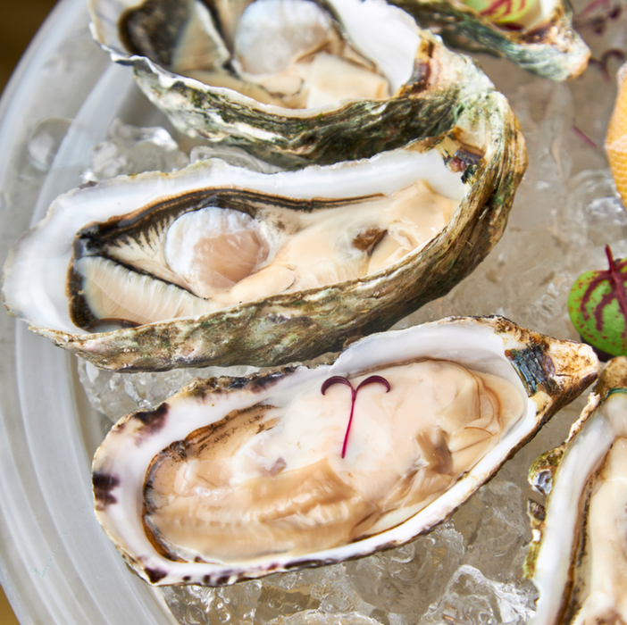
Наш ресторан гарантирует свежесть каждой устрицы. Перед подачей на стол гостю ее проверяют на этапе подготовки, а также су-шефом при отдаче официанту.
Многие ошибочно считают, что лимон к устрицам подается для проверки их свежести. Якобы при попадании нескольких капель лимонного сока тело моллюска отреагирует сокращением, значит устрица жива. На самом деле эта традиция возникла вовсе не из-за необходимости тестировать устрицы. Преследовалась другая, не менее практическая, цель. В те времена, когда транспортировка и хранение морепродуктов были задачей не из лёгких, устрицы часто портились в пути и становились действительно опасным для здоровья продуктом. Чтобы предотвратить неприятные последствия употребления возможно испортившихся устриц, люди стали использовать натуральные антисептики: сок лимона, молотый черный перец, уксус. А потом заметили, что это еще и вкусно.
Чтобы проверить свежесть устрицы, обратите внимание на следующие признаки: моллюск должен иметь прозрачный цвет и приятный морской запах, без резких рыбных нот. При легком прикосновении вилкой, край моллюска ("реснички") должен сокращаться, что подтверждает его живость.
Состав:
Устрицы подаются с:
- Красным винным уксусом.
- Луком шалот.
- Лимоном.
- Гренками.
- Сливочным маслом.
Морской ёж с соусом Понзу, муссом из авокадо и перепелиным желтком
Дикий морской ёж с пряным соусом Понзу, нежным муссом из авокадо и перепелиным желтком.
Особенности: 🌶️ острый |  кинза | 🍋 цитрусы | сырой |
кинза | 🍋 цитрусы | сырой |  чеснок | зелень
чеснок | зелень
Проговариваем, что по нашей авторской подаче, все ингредиенты (соуса, желток и имбирь) идут внутрь ежа. Можно сделать отдельно.
Проросток имбиря рекомендуется съедать после ежа, чтобы обновить рецепторы.
Соус Понзу, а также мусс из авокадо содержат перец чили и чеснок.
Морской Ёж - г. Мурманск.
{kind=link}
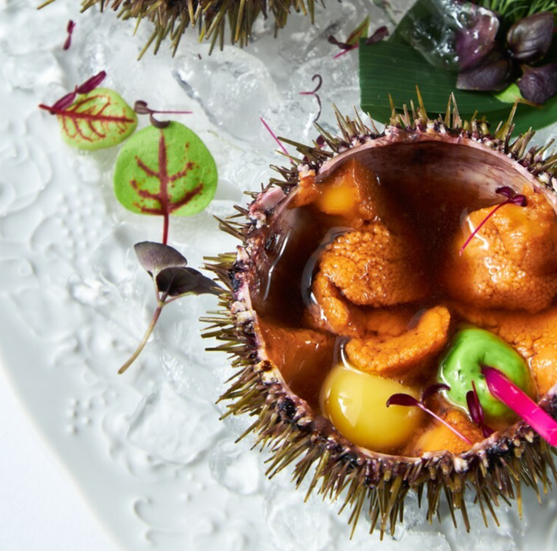
Состав:
- Морской Еж.
- Соус Понзу.
- Мусс из авокадо.
- Желток перепелиного яйца.
- Ростки имбиря.
Соус Понзу:
- Соевый соус, мирин, соус сладкий чили.
- Корень имбиря, перец чили, чеснок.
- Лемонграсс, кинза, мята.
Мусс из авокадо:
- Авокадо, огурцы малосольные.
- Фреш лайма, подсолнечное масло.
- Чеснок, перец чили.
- Кинза, мята.
Морской ёж — это экзотический деликатес, популярный в средиземноморской и азиатской кухнях, особенно в Японии и Италии, который употребляют в пищу благодаря его нежной, кремовой икре с солёным вкусом моря, напоминающим орехи и сливочный крем. В пищу используют не всё тело животного, а съедобные органы, икру и молоки, которые обладают удивительным набором самых полезных минералов и витаминов, среди которых: йод, полиненасыщенные жирные аминокислоты, представленные Омегой- 3 и - 6, лецитин, железо, витамины А, В и Е.
Хамон Serrano Gran Reserva (50 гр.)
Традиционный вяленый свиной окорок (Хамон Serrano Gran Reserva). Выдержка 15 месяцев.
Особенности:
свинина
Хамон (исп. jamón «окорок») - это традиционное испанское блюдо, национальный деликатес, изготавливаемый из задних ног свиньи. “Reserva” в названии означает выдержку минимум 12 месяцев.
Хамон серрано (jamón serrano) – один из двух основных типов хамона. Он производится из белых пород свиней, не соблюдающих специальной диеты, и выдерживается в прохладных условиях, обычно в горах, отсюда и название "серрано" (serrano - "горный").
Хамон иберико второй основной тип, производящийся из иберийских черных свиней, которые питаются желудями и выдерживаются дольше, что делает его более дорогим и престижным.
{kind=link}
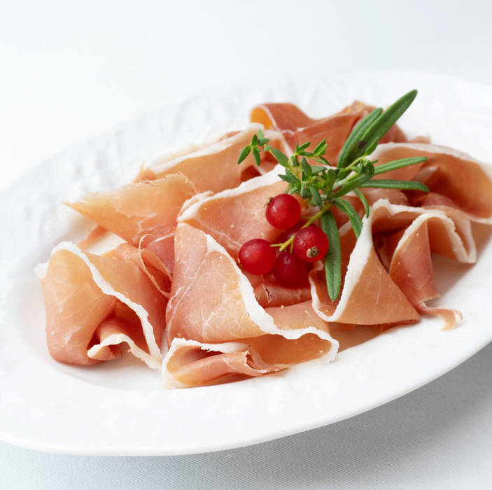
Брускетта с паштетом из куриной печени, сливочным сыром и трюфельным маслом
Воздушный паштет из куриной печени со сливочным сыром и ароматным трюфельным маслом на аппетитной картофельной бриоши
Особенности:
🥛 лактоза | зелень |  трюфель
трюфель
Добавляют пару капель масла с трюфелем.
Состав:
- Картофельный тост обжариваем на сливочном масле.
- Выкладываем паштет из куриной печени (куриная печень, утиный жир, сливки, сахар, сливочное масло, уксус малиновый, гренадин) и сливочный сыр.
- Сверху добавляем пару капель масла виноградной косточки с черным трюфелем
- Украшаем луком резанец.
{kind=link}
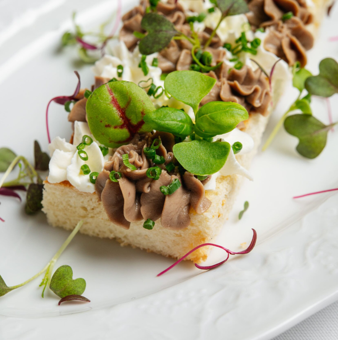
Брускетта с бурратой, томатами и соусом песто
Хрустящая чиабатта с нежным сыром буррата, сочными томатами и ароматным песто.
Особенности:
⛔ без мяса |🥛 лактоза |
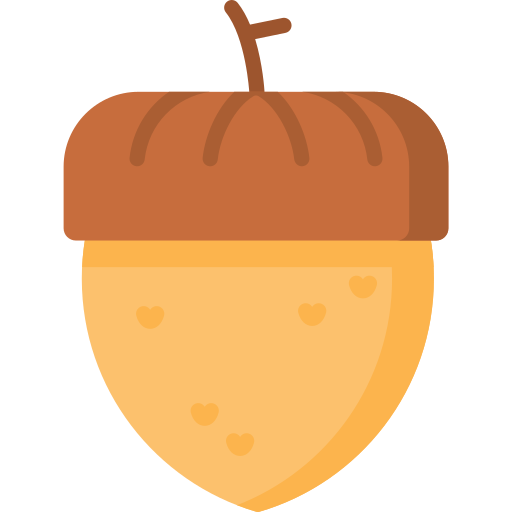
орехи | зеленьСоус песто: кедровые орехи, чеснок.
Состав:
- Чиабатту обжаривают на саламандре.
- Помидоры узбекские (конкасе) выкладывают сверху.
- Выкладывают сыр буррата (семейство моцарелловых, внутри бурраты – страчателла).
- Добавляют соус песто и масло оливковое.
- Базилик зеленый, базилик фиолетовый.
{kind=link}
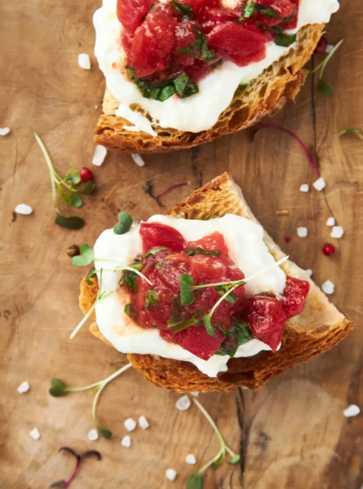
Буррата (итал. burrata) — итальянский свежий сыр, родом из Апулии, южного региона Италии, изготавливаемый из сливок и молока буйволицы или коровы и представляет собой мешочек из моцареллы, наполненный мягкой начинкой из страчателлы (сливок и нитей моцареллы). Буррата обладает нежным сливочным вкусом и кремообразной текстурой. Интересно, что этот сыр появился как способ безотходного производства, когда остатки моцареллы и сливок были объединены в один сыр. Благодаря своему нежнейшему вкусу, сыр буррата за сравнительно небольшое время приобрёл большую популярность, и в настоящее время считается деликатесом.
Брускетта с лесными грибами в сливочном соусе
Ароматные лесные грибы в сливочном соусе на ломтике хрустящей чиабатты
Особенности:
⛔ без мяса |🥛 лактоза |
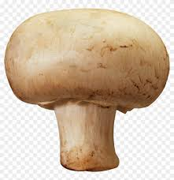
грибыСливочный соус.
Состав:
- Чиабатту обжаривают на саламандре.
- На хлеб выкладываем жареные шампиньоны в сливках с добавлением тимьяна, а сверху жареные белые грибы/
{kind=link}
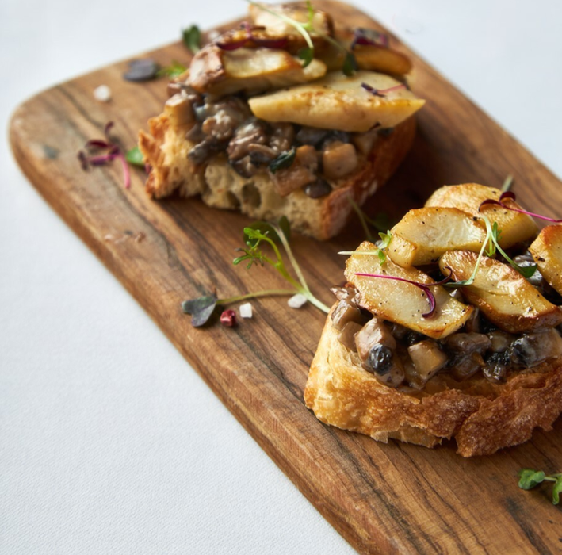
Тартар из премиальной говяжьей вырезки с жаренным картофелем
{kind=link}
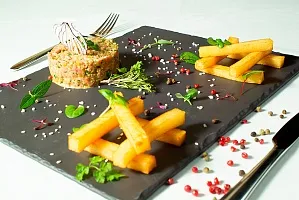
Состав:
- Премиальная говяжья вырезка.
- Желток перепелиного яйца, горчица.
- Оливковое масло.
- Кетчуп.
- Ворчестер, табаско.
- Соль, перец (свежемолотый).
- Каперсы, корнишоны.
- Лук шалот.
- Кинза, петрушка.
- Картофель фри (отварной, а потом обжаренный во фритюре).
- Кунжут, розмарин (украшение).
Тартар - это блюдо французской кухни, которое может быть как из сырого мяса, так и из рыбы или овощей, порезанных на мелкие кубики. Чаще всего тартар ассоциируется с сырой говядиной, смешанной с различными ингредиентами, такими как лук, каперсы, маринованные огурцы, горчица, яичный желток и соусы. Подается с гренками, брускеттами, картофелем фри или в качестве дополнения к салатам.
Мало кто знает, но тартар - это не только блюдо французской кухни (а также соус), но еще и способ нарезки продуктов, который подразумевает их измельчение на очень мелкие кубики, примерно 5х5 мм.
История появления этого блюда несколько неоднозначна и по-прежнему вызывает споры среди историков. В первоначальном варианте тартар из сырого мяса появился практически одновременно с оригинальным соусом тартар, в который добавлялись каперсы или соленые огурцы.
Король Людовик, будучи восхищенным воинственными подвигами татар, сравнивал их с античным подобием посланников ада. Название «тартаты» появилось с легкой руки правителя и закрепилось за названия этих двух блюд в дальнейшем, так как король был уверен, что татары употребляют в пищу исключительно сырое мясо и соленые огурцы.
Ассорти изысканных мясных деликатесов
{kind=link}
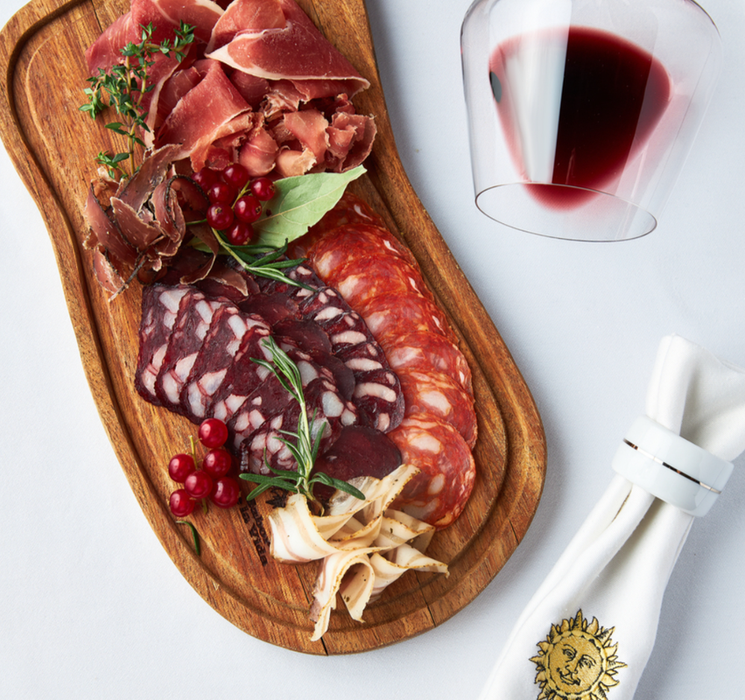
Томат и краб
Сочный томат фаршированный нежным крабовым мясом, спелым авокадо и сливочной страчателлой в сочетании с листьями шпината и ароматным базиликовым маслом.
Особенности:
🌶️ острый | чеснок | зелень | эстрагон
чеснок | зелень | эстрагон
Пикантное блюдо.
В начинку добавляют немного эстрагона и кокосового молока.
Маринад Ким Чи: фреш имбирный, перец Чили.
Крабовый соус: перец чили.
Домашний кетчуп: чеснок, ворчестер.
Краб - Дальний Восток.
{kind=link}
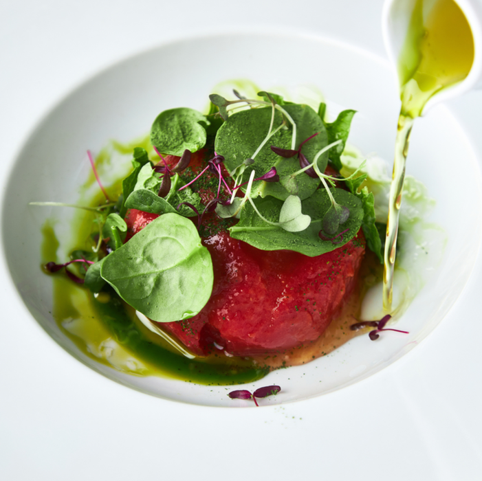
Состав:
- Из помидора (узбекские) вынимаем середину.
- Помидор в течении часа маринуем в Ким Чи маринаде.
- Фаршируем авокадо, страчателлой, мясом краба, с добавлением эстрагона и крабового соуса.
- Помидор смазываем домашним кетчупом.
- На дно тарелки наливаем немного кетчупа на него выкладываем помидор, оформляем листьями шпината.
- Отдельно томатная вода с базиликовым маслом.
Маринад Ким Чи: уксус винный, паста овощная Ким Чи, соус устричный, крахмал кукурузный, фреш имбирный, перец чили.
Крабовый соус: молоко кокосовое, биск краб/креветка, томаты, масло подсолнечное, соус устричный, перец чили.
Домашний кетчуп: помидоры, чеснок, масло оливк, тимьян, базилик, ворчестер.
Томатная вода: базиликовое масло, помидоры узбекские, соль, сахар, тимьян.
Тартар из тунца с испанскими оливками, кедровыми орехами и зеленью
Нежное филе тунца, в сочетании с испанскими оливками, кедровыми орехами и ароматной зеленью.
Особенности:
 кинза | 🍋 цитрусы | орехи | сырой | зелень
кинза | 🍋 цитрусы | орехи | сырой | зелень
Сырая рыба. Подается с долькой лимона только по просьбе гостя.
Тартар готовится с добавлением кедровых орехов, кинзы, оливок и лимонного фреша.
Желтоперый тунец (yellowfin tuna) - Китай.
Состав:
- Филе тунца
- Оливки испанские.
- Кедровый орех.
- Петрушка, лук зеленый, кинза.
- Масло оливковое, лимонный фреш.
- Украшаем сеткой из муки, подсолнечного масла, воды и чернил каракатицы.
{kind=link}
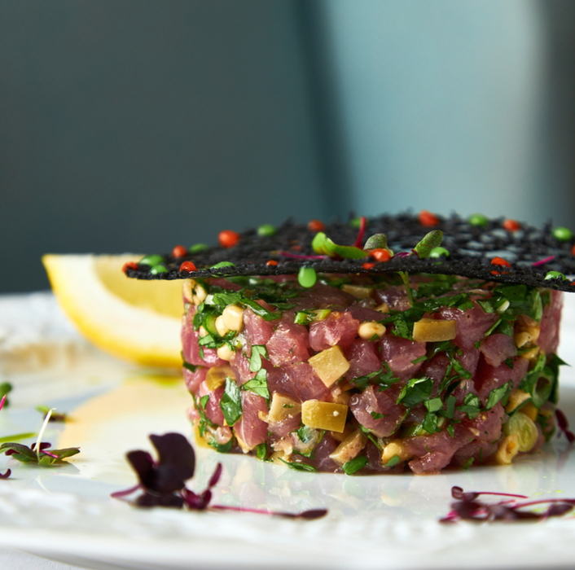
Среди любителей морепродуктов популярны два вида тунца: голубой тунец (bluefin tuna) и желтоперый (yellowfin tuna). Эти два типа часто используются в рецептах как взаимозаменяемые, но они имеют явные различия во вкусе, текстуре и пищевой ценности. Блюфин считается деликатесом, он более ценный и дорогой, его мясо имеет насыщенный вкус и текстуру, напоминающую сливочное масло. Мясо желтоперого тунца уступает по вкусу блюфину, но также является вкусным и востребованным, оно более распространено и доступно по цене.
Оба вида являются хорошим источником жирных кислот омега-3, белка, витамина B12 и витамина D. В них также мало жиров и калорий, что делает это мясо отличным выбором для людей, которые следят за своим весом. Однако, следует помнить, что все виды тунца, могут иметь высокий уровень ртути, поэтому их следует употреблять в умеренных количествах.
Карпаччо из креветки с кремом из баклажана, томатами и соусом манго-чиа
Нежное филе свежих королевских креветок в сочетании с кремом из баклажана, сегментами апельсина и ярким соусом манго-чиа.
Особенности:
🥛 лактоза | 🌶️ острый |  кинза | 🍋 цитрусы | сырой |
кинза | 🍋 цитрусы | сырой |  лук | зелень | мёд | кунжут
лук | зелень | мёд | кунжут
В составе практически сырые креветки, заправленные кунжутным маслом.
Апельсиновый джем, апельсины.
В соусе манго-чиа лук шалот, мед, лайм, кинза, перец чили, семена чиа.
В крем из баклажанов добавляются сливки.
{kind=link}
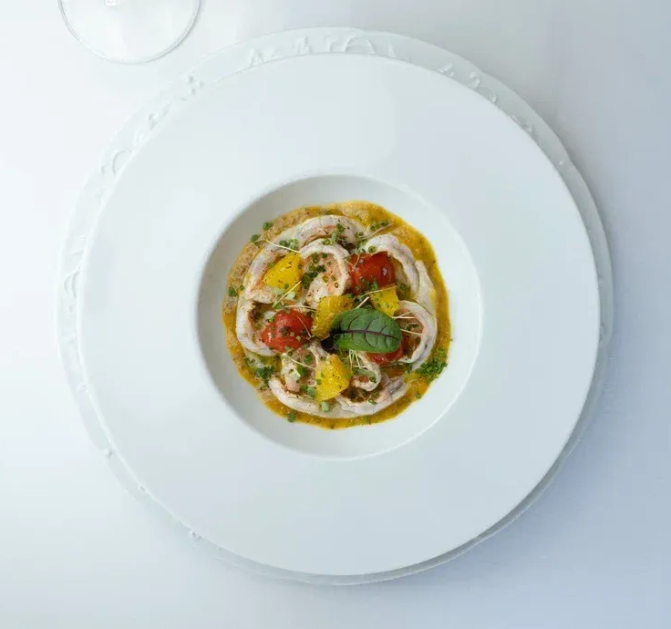
Карпаччо (итал. carpaccio) — это блюдо итальянской кухни, представляющее собой тонко нарезанные ломтики сырой говядины, обычно вырезки, приправленные соусом на основе оливкового масла и лимонного сока. В современном варианте карпаччо может готовиться из различных продуктов, включая рыбу, морепродукты, овощи и даже фрукты, но традиционно оно ассоциируется именно с сырой говядиной.
Как в случае с тартаром карпаччо – это одновременно и способ тонкой нарезки продукта, обычно сырого мяса, но также используемый для рыбы, овощей и фруктов. Основная особенность карпаччо – это очень тонкие ломтики, практически прозрачные, которые выкладываются на тарелку и подаются с различными соусами и добавками.
Состав:
- В глубокую тарелку выкладываем крем из баклажанов (баклажаны, сливки).
- Сверху креветки (сырые, маринованные в оливковом масле, с солью и перцем). Слегка обжигаем горелкой и приправляем кунжутным маслом.
- Сверху томатное пюре (пюре из томатов, апельсиновый джем).
- Далее сегменты апельсина и лук резанец.
- Края тарелки украшаем соусом манго-чиа.
Соус манго-чиа:
- Пюре манго, семена чиа.
- Устричный соус.
- Лук шалот.
- Мед.
- Лайм.
- Кинза.
- Чили перец.
Севиче из сибаса с томатами, авокадо и перцем чили
Нежное филе сибаса, выдержанное в пикантном маринаде, со спелым кремовым авокадо, сладкими томатами и перцем чили.
Особенности:
🌶️ острый |  кинза | 🍋 цитрусы | сырой |
кинза | 🍋 цитрусы | сырой |  чеснок |
чеснок |  лук | зелень
лук | зелень
Пикантное блюдо c добавлением перца чили. Перец можно подать отдельно, но пикантность маринада сохраниться.
При подаче заливаем маринадом и рекомендуем промариноваться блюду пару минут.
Сибас - Турция.
{kind=link}
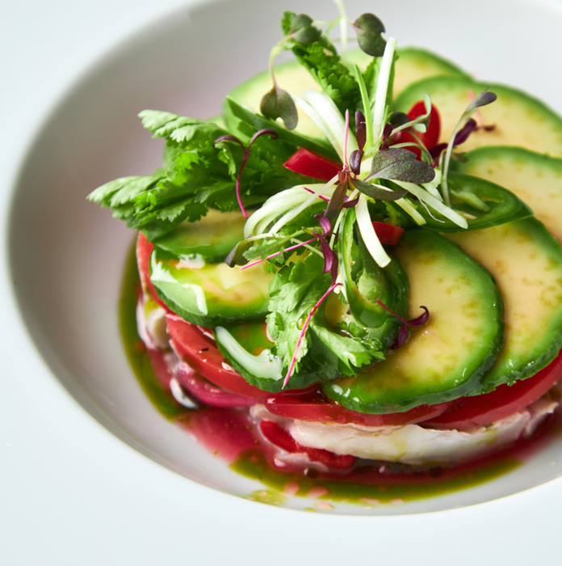
Состав:
- Первый слой: сибас.
- Второй слой: лук и зелень с маринадом.
- Третий слой: сибас.
- Четвертый слой: томаты.
- Пятый слой: авокадо.
- Украшаем перцем чили (зеленым и красным), зеленым луком.
- Маринад подается отдельно.
Маринад:
- Рыбный соус, соевый соус, мирин.
- Лемонграсс, фреш лайма, фреш лимона.
- Перец чили, корень имбиря, чеснок.
- Кинза, красный лук.
Севиче (Ceviche, Sebiche) - это популярное латиноамериканское блюдо родом из Перу, представляющее собой сырую рыбу или морепродукты, маринованные в цитрусовом соке, обычно в соке лайма и/или лимона. Маринад из цитрусовых денатурирует белки рыбы, "готовя" её без термической обработки.
Отличие севиче от тартара и карпаччо заключается в способе приготовления и ингредиентах:
- тартар - сырое мясо или рыба мелко нарезанные и часто смешанные с другими ингредиентами, формируя пастообразную массу.
- карпаччо - тонкие ломтики сырого мяса или рыбы, подаются с заправкой.
Карпаччо из запечённой свёклы со сливочным сыром, кедровыми орехами и копченым маслом
{kind=link}
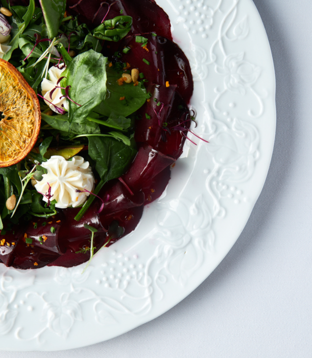
Карпаччо из запеченной свёклы с нежным сливочным сыром, кедровыми орехами в сочетании с листьями салата под ароматным копченым маслом.
Особенности:
⛔ без мяса | 🥛 лактоза | 🍋 цитрусы | орехи | зелень
Цедра апельсина, кедровые орехи.
Листья салата заправляются копченым маслом.
Рекомендуется ограничить прием заказов в интенсив этой позиции. Время приготовления 20-25 минут.
Состав:
- Свёкла запекается в морской соли, выкладывается слайсами по кругу тарелки, и посыпается цедрой апельсина.
- В центре микс салата, заправленный копченным маслом (копченое масло, уксус винный и бальзамический, лук резанец).
- Сыр креметте.
- Украшается кедровыми орехами, а также чипсами из базилика, красного лука, свёклы.
Ассорти из шести благородных сыров
Ассорти из шести благородных сыров в сочетании с натуральным мёдом, грушевым конфитюром, грецкими орехами и красной смородиной.
Особенности:
⛔ без мяса | 🥛 лактоза | орехи | зелень | мёд
Все сыры российского производства. Готовятся по технологии оригинальных стран-производителей.
Состав:
- Манчего (овца).
- Манчего с трюфелем (овца).
- Манчего с розмарином (овца).
- Мантова (корова).
- Стелла альпина (овца).
- Горгондзола с трюфелем (корова).
Грецкие орехи, мед, грушевый конфитюр, ягоды, мята.
{kind=link}
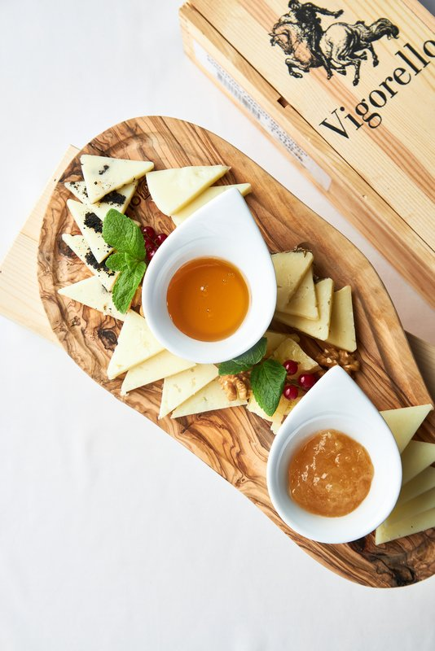
Манчего (исп. Manchego) — испанский твердый сыр из овечьего молока овец породы манчего, производимый в регионе Ла-Манча. Он обладает характерным вкусом и текстурой, которые зависят от срока выдержки.
Сталла Альпина (Stella Alpina - альпийская звезда) — твердый овечий сыр, производимый в Италии. Он известен своим насыщенным вкусом и ломкой структурой с кристаллами кальция.
Мантова (Mantova) — это твердый сыр, изготовленный по технологии итальянского сыра Монтазио из пастеризованного коровьего молока. Происхождение слова связано с итальянским городом Мантуя (Mantova), где, как считается, сыр Монтазио был впервые произведен. В русском языке название "Мантова" было адаптировано для обозначения этого сыра. Он имеет соломенно-желтый цвет, плотную текстуру и небольшие "глазки". Вкус варьируется от нежного кремово-молочного у молодых сыров до насыщенного и слегка пикантного у более выдержанных.
🔥 Горячие закуски
Эскалоп фуа-гра с грушей пакхам под ягодно-ромовом соусом
{kind=link}
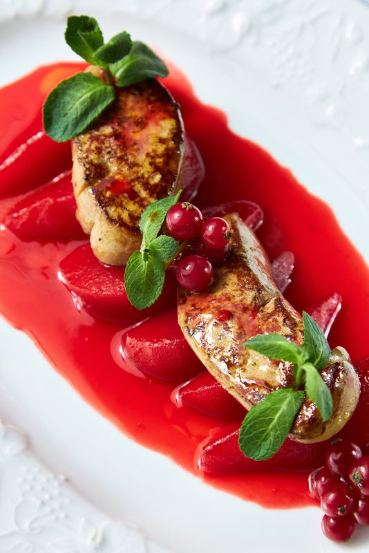
Изысканный эскалоп фуа-гра с томленой грушей пакхам под ягодно-ромовом соусом.
Особенности:
вино | коньяк | ром
Груша фламбируется ромом.
Фуа-гра маринуется с использованием порто и коньяка.
Состав:
- Груша обжаривается на сливочном масле, фламбируется ромом, добавляется немного гренадина.
- Тушится с добавлением куриного бульона.
- Фуа-гра (эскалоп - цельный кусок) предварительно маринуется с использованием порто и коньяка.
- Фуа-гра выкладывается на грушу, поливается соусом, в котором томилась груша, с добавлением небольшого количества сливочного масла.
- Украшается: мятой, ягодами
Эскалоп (фр. escalope) – это блюдо французской кухни, представляющее собой тонко нарезанный кусок мяса, обычно из вырезки, обжаренный на сковороде или гриле. Название происходит от французского слова «escalope», что означает "ореховая скорлупа", из-за сходства поджаристой корочки мяса с формой ореховой скорлупы. В различных кухнях так называют также ровные, круглые пласты мяса, нарезанные те только из вырезки, но и из других частей мякоти.
Груша пакхам (англ. Packham) – это сорт груши, выведенный в Австралии, известный своим крупным размером, зелёной кожурой и сочной, сладкой мякотью. Мякоть также имеет хрустящую текстуру из-за небольших твердых вкраплений.
Фуа-гра́ (фр. foie gras «жирная печень») — это деликатес, представляющий собой специальным образом приготовленную печень откормленного гуся или утки. Его получают в результате интенсивного кормления птицы, в результате чего печень увеличивается в размере и становится более жирной, чем у обычной птицы. Фуа-гра имеет древнюю историю, его корни уходят во времена Древнего Египта, Греции и Рима, где уже знали о существовании жирной печени птицы. Фуа-гра может быть сырым (cru), полуготовым (mi-cuit) или консервированным (cuit), в зависимости от способа тепловой обработки. Фуа-гра отличается нежной, маслянистой текстурой и богатым, насыщенным вкусом, который может варьироваться в зависимости от вида птицы (гусь или утка).
Запеченные мидии со шпинатом под сырно-трюфельным фондю
Запеченные мидии с томленым шпинатом под сырно-трюфельным фондю.
Особенности:
🥛 лактоза | чеснок |
чеснок |  лук | зелень | вино |
лук | зелень | вино |  трюфель
трюфель
Фондю с добавлением трюфеля и сливок.
Шпинат томится с луком шалот, чесноком и белым вином.
Мидии - Дальний Восток.
В порции 12-13 штук.
{kind=link}
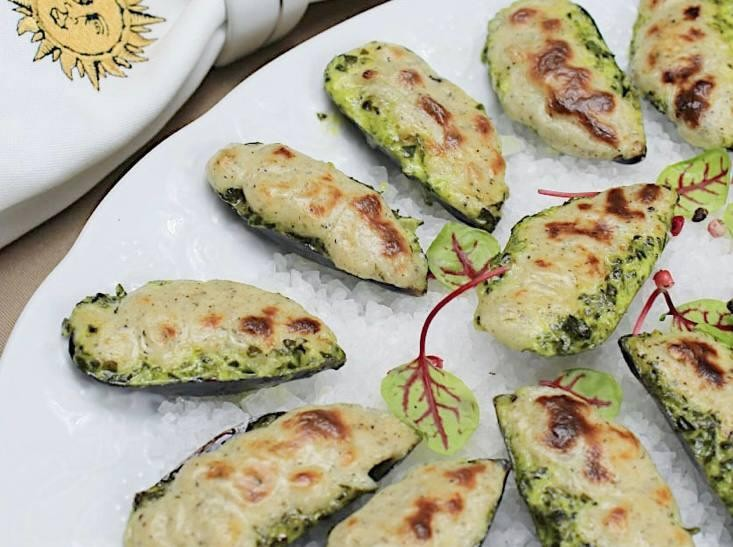
Состав:
- Бланшируем (ошпариваем) мидии.
- Выкладываем (в мидии) томленый шпинат.
- Выкладываем фондю.
- Запекаем под саламандром.
Фондю:
- Грана падано.
- Сливки.
- Желток.
- Паста трюфельная, масло трюфельное.
- Крахмал.
Томленый шпинат:
- Шпинат.
- Лук шалот, чеснок.
- Оливковое масло.
- Вино белое.
- Тимьян.
Устрицы запечённые под соусом Шабли с мускатным орехом и луком шалот
Нежная африканская устрица запечённая под сливочным соусом шабли с мускатным орехом и луком шалот.
Особенности:
🥛 лактоза | орехи |  лук | вино
лук | вино
В соусе Шабли: белое вино, лук шалот, сливки, мускатный орех.
Устрица Розовая Джоли - Намибия (Африка).
{kind=link}
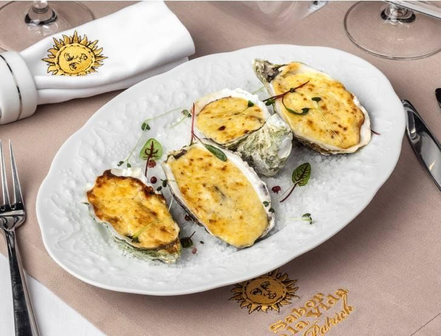
Состав:
- Устрица в раковине отваривается с добавлением рыбного бульона и белого вина.
- Добавляем соус шабли, лук шалот, устричный бульон.
- Выпекаем под саламандром.
Соус шабли:
- Сливочное масло
- Лук шалот
- Белое вино, сливки.
- Мускатный орех.
Улитки по-бургундски
{kind=link}
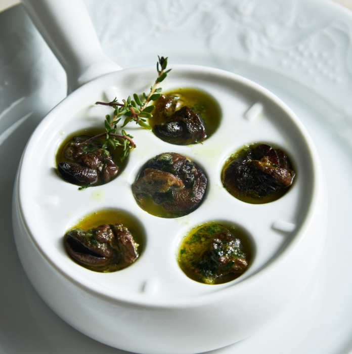
Традиционные французские улитки, запечённые в сливочном масле с добавлением ароматной зелени и чеснока.
Особенности:
 чеснок | зелень
чеснок | зелень
Улитки запекаются с чесночным маслом и зеленью.
В порции 6 улиток без раковин.
Состав:
- Улитки виноградные (без раковин).
- Чесночное масло, масло сливочное.
- Петрушка.
По умолчанию отдается с 2 ломтиками подсушенной чиабатты без чеснока.
Улитки по-бургундски ( фр. "Escargots à la bourguignonne") - это французское блюдо, представляющее собой улиток, обычно виноградных, приготовленных в ароматном масляном соусе с чесноком и зеленью, часто петрушкой. Это блюдо является традиционной закуской в регионе Бургундия, откуда и происходит его название.
Креветки в соусе васаби
Сочные креветки, фламбированные коньяком, с миксом из свежих листьев салата и пикантным соусом васаби.
Особенности:
🌶️ острый | 🍋 цитрусы | зелень | коньяк
Креветки обжариваются на оливковом масле с добавлением зелени, лимонного фреша
и коньяка.
Соус васаби также содержит сок лимона.
5 креветок в порции, при необходимости можно добить по весу.
Креветки - Бангладеш.
{kind=link}
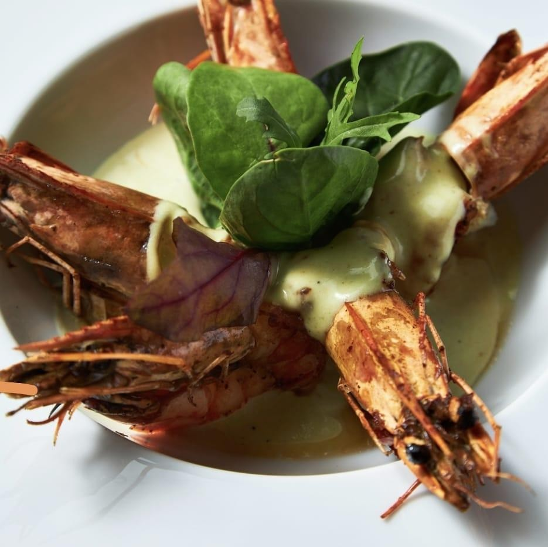
Состав:
- Тигровые креветки обжариваются на оливковом масле с добавлением петрушки, сливочного масла, лимонного фреша и коньяка.
- Подаются в глубокой тарелке, на дне которой выложен микс салат, заправленный соусом васаби (японский порошок васаби, домашний майонез и сок лимона).
Баклажан юдзу
Баклажан, глазированный соусом свит чили с копченым угрем Унаги, в сочетании со спелыми томатами, сливочной страчателлой и кунжутом юдзу.
Особенности:
🥛 лактоза | 🌶️ острый |  кинза | 🍋 цитрусы | зелень | кунжут
кинза | 🍋 цитрусы | зелень | кунжут
Украшается листьями кинзы, семенами кунжута юдзу.
Соус унаги: фреш лайм, лимон.
Угорь - Китай.
{kind=link}
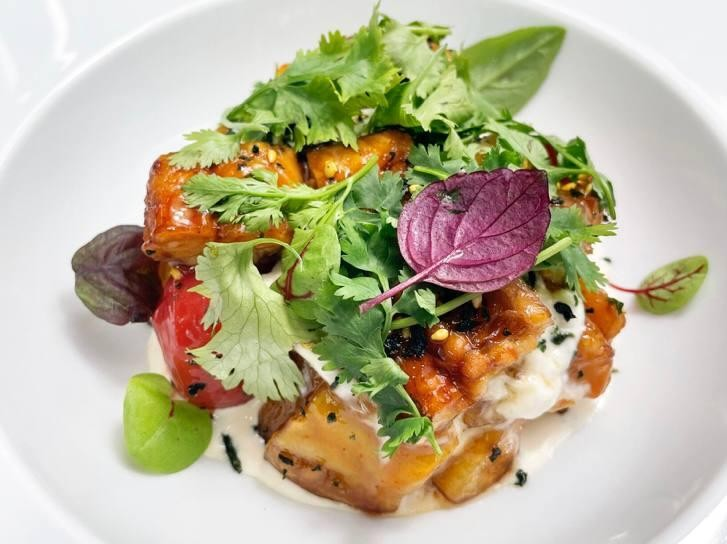
Состав:
- Угорь в соусе унаги подготавливается под саламандром.
- Помидоры черри бланшируем.
- Баклажаны обваливаем в кукурузном крахмале и обжариваем во фритюре. Глазируем соусом свит чили, с добавлением устричного соуса.
- Выкладываем на тарелку. Сверху страчателла, листья кинзы и шисо, томаты черри, кунжут юдзу.
Соус унаги:
- Мирин, соевый соус, соус угря.
- Фреш лайма, лимон.
- Корень имбиря.
- Сахар.
Тартар из баклажан с томатами, зеленью и постным песто
Карамелизованные баклажаны, со спелыми томатами, ароматной зеленью и постным песто.
Особенности:
 кинза | орехи |
кинза | орехи |  лук | зелень |
лук | зелень |
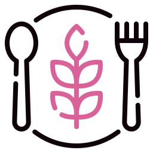
постныйВ составе кинза и лук шалот.
Постный песто без сыра, но с кедровыми орехами.
Блюдо для вегетарианцев и веганов.
В меню у нас не представлено, но предлагаем гостям, если они не едят мясо (вегетарианство).
Состав:
- Помидоры режем кубиком и соединяем с зеленью (кинза, лук шалот, лук зеленый).
- Добавляем постный песто (без грана падано).
- Баклажаны очищаем, обваливаем в кукурузном крахмале и обжариваем во фритюре.
{kind=link}
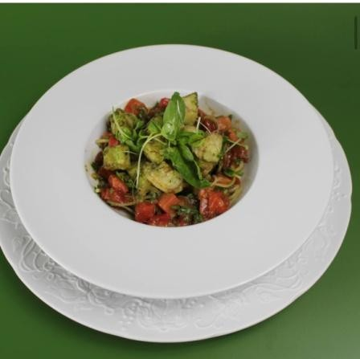
🥗 Салаты
Салат с запечённым ростбифом
Запеченный домашний ростбиф в сочетании с миксом из свежих салатных листьев, сахарными томатами, творожным муссом под медово-горчичной заправкой.
Особенности:
🥛 лактоза |  кинза | 🍋 цитрусы |
кинза | 🍋 цитрусы | чеснок |
чеснок |  лук | зелень | мёд
лук | зелень | мёд
Медово-горчичная заправка с добавлением мёда, ворчестера, фреша лимона, горчицы.
Соус чимичурри готовится с добавлением кинзы, лука шалот, чеснока, халапеньо.
{kind=link}
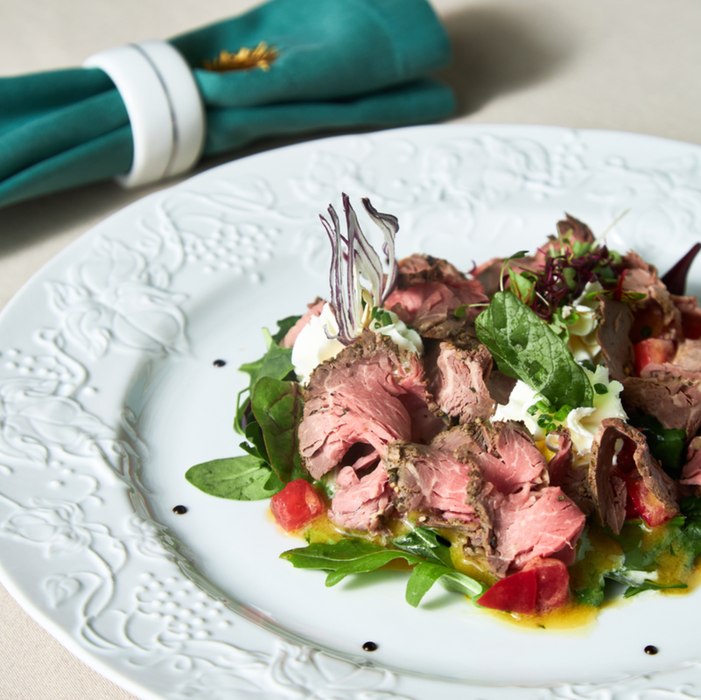
Состав:
- Микс салат.
- Узбекские томаты.
- Ростбиф (обжаривается на хоспере).
- Сыр креметте.
- Соус чимичурри (кинза, петрушка, лук шалот, чеснок, халапеньо).
- Медово-горчичная заправка (мёд, ворчестер, фреш лимона, масло оливковое, горчица дижонская).
- Украшаем крем бальзамиком и луком резанец.
Домашний ростбиф:
- Горчица зернистая и дижонская.
- Чеснок.
- 3 перца — красный, зелёный, чёрный.
- Тимьян, розмарин.
Ростбиф (от англ. roast beef — «запечённая говядина») — традиционное блюдо английской кухни, представляющее собой крупный кусок говядины, запечённый в духовке так, чтобы снаружи образовалась румяная корочка, а внутри мясо оставалось сочным. Для приготовления чаще всего используют спинную или рёберную часть, реже — филе. Иногда ростбиф готовят на гриле или тушат. Готовое мясо нарезают поперёк волокон на тонкие ломтики.
Салат с сочной телятиной и ароматными грибами
Румяные ломтики телятины на подушке из салатных листьев с сахарными томатами, ароматными грибами под медово-горчичным соусом.
Особенности:
🥛 лактоза |  кинза |
кинза | чеснок |
чеснок |  лук | зелень | мёд | грибы | medium |
лук | зелень | мёд | грибы | medium |  трюфель
трюфель
Заправка: мед, горчица.
Грибной кетчуп: грибы, лук шалот, чеснок, паста трюфельная.
Прожарка телятины -medium.
{kind=link}
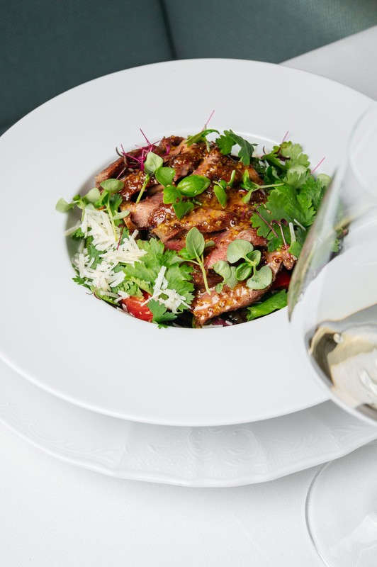
Состав:
- Вырезку готовим в Су-Вид, после обжариваем.
- Грибы шиитаки обжариваем на оливковом масле с чесноком.
- Микс салата, помидоры, подпеченный болгарский перец, каперсы, лук резанец заправляем медово горчичным соусом.
- Добавляем грибы шиитаки, грибной кетчуп.
- Украшаем кинзой и сыром пармезан.
Грибной кетчуп:
- Шампиньоны обжаренные с луком шалот и чесноком.
- Каперсы.
- Паста трюфельная.
Салат Кардини с перепелкой, томатами, перепелиным яйцом и чесночными гренками
.jpg){kind=link}
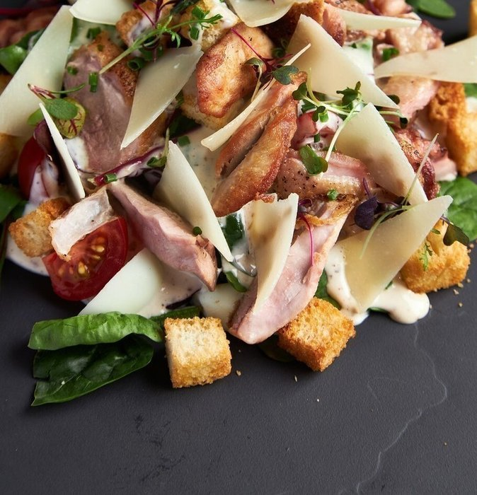
Авторская вариация знаменитого салата Цезарь с золотистой перепелкой, лепестками Грана Падано, спелыми томатами черри и чесночными гренками.
Особенности:
🥛 лактоза | 🌶️ острый | 🍋 цитрусы | чеснок | зелень | анчоусы
чеснок | зелень | анчоусы
Обязательно предупреждаем, что соус достаточно солоноват за счет большого количества анчоусов.
Салат подаем с чесночными гренками.
Состав:
- На грифельную доску выкладывается микс салата.
- Добавляем томаты черри, перепелиные яйца, гренки обжаренные с чесноком.
- По бокам доски и на микс салата добавляется соус на основе анчоусов.
- Добавляется перепелка (обжаренная на оливковом масле) и сыр Грана падано.
- Посыпается луком резанец.
Соус на основе анчоусов:
- Домашний майонез.
- Лимонный сок.
- Анчоусы.
Цезарь Кардини (итал. Cesar Cardini, при рождении Caesare Cardini) — итальянский ресторатор, шеф-повар и владелец отеля совместно со своим братом Алексом Кардини. Ему приписывают создание салата «Цезарь» в 1924 году в его ресторане Caesar’s в Тихуане (Мексика). Оригинальная заправка Цезаря так и называется Cardini’s Caesar Dressing и не имеет в составе привычных продуктов, таких как курица или анчоусы — это поздние добавки.
Теплый салат с Фуа-гра, перепелкой и карамелизированным яблоком
Изысканная фуа-гра с поджаренной перепелкой на двух хрустящих тостах в сочетании с миксом из свежих салатных листьев, лука фри и карамелизированным яблоком.
Особенности:
🥛 лактоза |  лук |
лук |
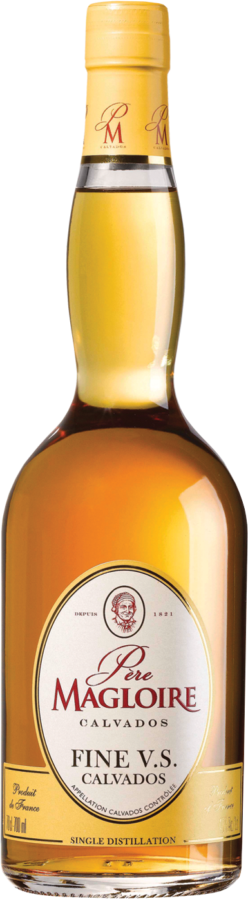
кальвадосЯблоко фламбируется кальвадосом.
Листья салата посыпают сухим луком.
{kind=link}
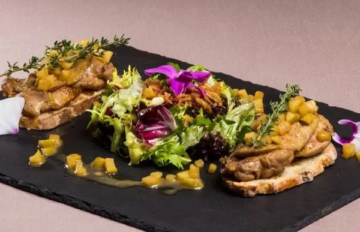
Состав:
- На грифельную доску выкладывается микс салат.
- Сверху зеленое яблоко (Гренни Смит), приготовленное с добавлением кальвадоса и
сливочного масла.
- Посыпается сухим луком.
- Подается с двумя гренками (мюсли с черносливом, изюмом и курагой), обжаренной перепёлкой и террин из фуа-гра.
Террин (фр. Terrine) – это французское блюдо, представляющее собой запеченный паштет или мясной хлеб, приготовленный в прямоугольной форме, называемой террином. Его можно готовить из мяса, рыбы, овощей или даже фруктов, и часто он содержит слои различных ингредиентов. Террин, как правило, подается холодным, нарезается на ломтики и часто используется в качестве закуски.
Основное отличие эскалопа и террина заключается в том, что террин - это паштет, приготовленный из измельченного мяса, запеченный в форме (часто в форме бруска, и подается в виде ломтиков), в то время как эскалоп - это тонко нарезанный кусок мяса, который обычно обжаривается.
Теплый салат с жаренным осьминогом, овощами, оливками под горчичным соусом
Теплый салат с жаренным осьминогом, свежими овощами, оливками, перцем чили под пряным горчичным соусом.
Особенности:
🌶️ острый |  кинза | 🍋 цитрусы |
кинза | 🍋 цитрусы | чеснок |
чеснок |  лук | зелень
лук | зелень
Украшается перцем чили, кинзой и сухим луком (можно без них). Подается с горчичным соусом (на тарелке отдельно).
С добавлением маслин по тажарски и чесночного масла и фреша лимона.
Осьминог –Марокко.
{kind=link}
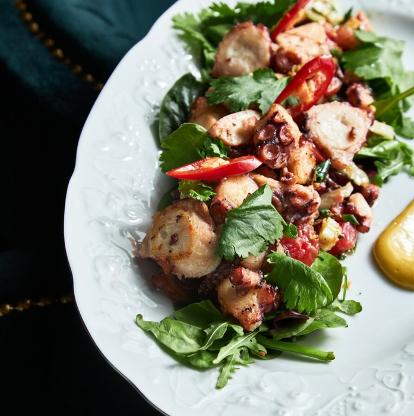
Состав:
- Микс салата, лук зеленый.
- Сверху выкладывается сельдерей, томаты, маслины по тажарски, заправляется лимонным фрешем, чесночным маслом и специя хазанут.
- Сверху выкладывается осьминог обжаренный на оливковом и чесночным масле.
- Соус горчичный (отдельно).
- Украшается перцем чили, кинзой и сухим луком.
Соус горчичный:
- Дижонская горчица.
- Уксус винный, уксус бальзамический.
- Масло оливковое.
- Сок лимона.
Салат с мясом краба и опаленными овощами под медово-горчичной заправкой
{kind=link}
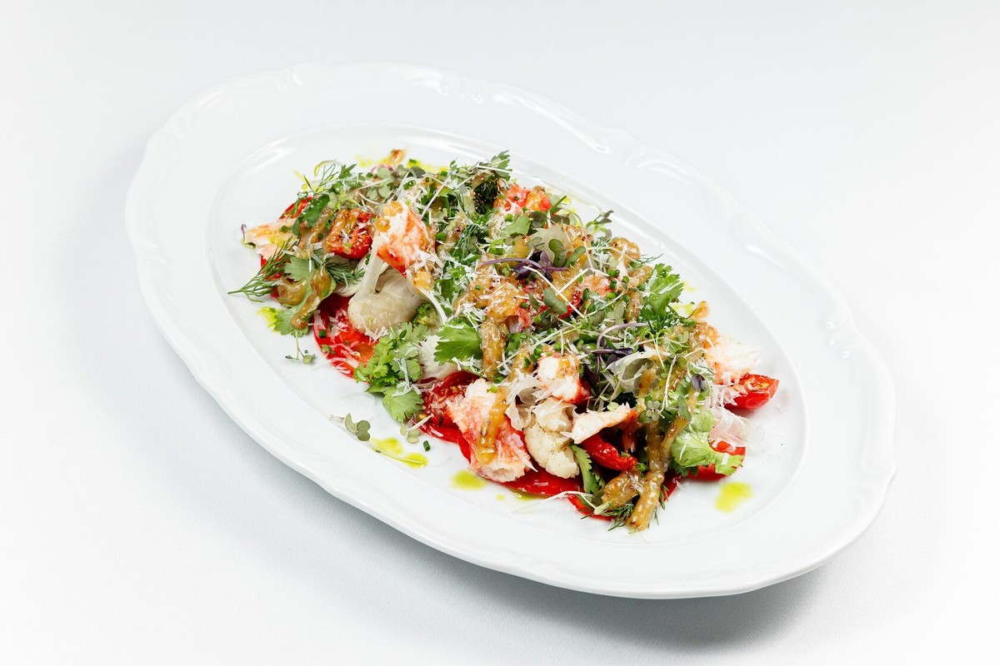
Салат с нежным мясом краба, опаленными овощами, хрустящим фенхелем под медово-горчичной заправкой и сыром Грана Подано.
Особенности:
🥛 лактоза |  кинза | зелень | мёд
кинза | зелень | мёд
Соус с добавлением горчицы зернистой и меда.
Укроп и кинза и базиликовое масло.
Краб - Дальний Восток.
Состав:
- Мясо краба (свежее).
- Томаты опаленные, вяленые черри.
- Цветная капуста и брокколи бланшированные, а затем маринованные в масле с солью и перцем.
- Слайсы фенхеля.
- Укроп, кинза.
- Базиликовое масло.
- Соус медово-горчичный: мёд, горчица зернистая, уксус бальзамический, масло оливковое.
- Украшаем натертым сыром Грана Падано.
Салат с морепродуктами и мятым авокадо
{kind=link}
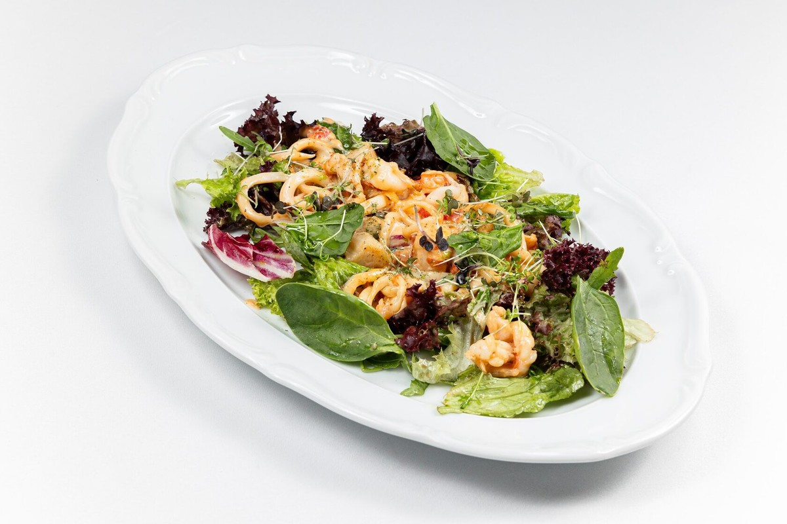
Королевские гребешки, креветки и нежное филе кальмара в сливочном соусе, в сочетании с мятым авокадо, пикантной заправкой, под ароматным бальзамическим дрессингом.
Особенности:
🥛 лактоза | 🌶️ острый |  кинза |
кинза |  чеснок |
чеснок |  лук | зелень | мёд
лук | зелень | мёд
В бальзамический дрессинг добавляют мед, но в очень небольшом количестве.
Соус Чимичури содержит зелень (кинза), лук шалот, чеснок и халапеньо.
Состав:
- Морской гребешок, креветки и кольца кальмара обжариваем на оливковом масле.
- Далее добавляем конкассе из томатов, сливки и тушим.
- Микс салата заправляем бальзамическим дрессингом (бальзамический уксус, мед, оливковое масло).
- Добавляем мятый авокадо с соусом Чимичурри (кинза, петрушка, лук шалот, чеснок, халапеньо).
- Выкладываем полученную массу в центр тарелки, сверху морепродукты с соусом в котором они тушились.
- Украшают листьями шпината и зеленой пылью (из сухого шпината).
Острова в океане (Салат с тунцом и сальсой из томатов и маслин)
Нежное филе тунца , обжаренного в кунжуте, в сопровождении яркой сальсы из томатов, маслин и ароматной зелени.
Особенности:
 кинза | сырой | кунжут
кинза | сырой | кунжут
Тунец маринуется в соевом соусе и обжаривается в кунжутной панировке (прожарка medium rare).
В сальсу из томатов добавляют зелень (кинза) и кунжутное масло.
Тунец - Китай.
{kind=link}
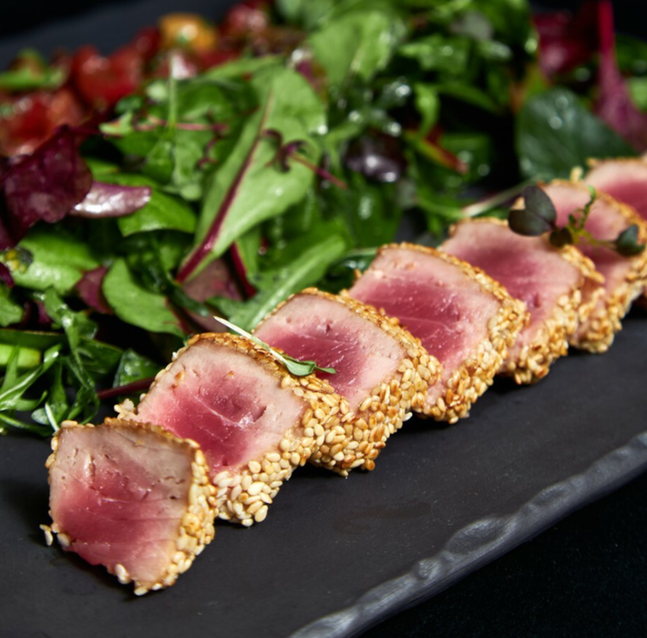
Состав:
- Филе тунца. Тунец маринуется в соевом соусе, панируется кунжутом и слегка обжаривается на оливковом масле до состояния medium rare.
- Сальса из томатов: томаты узбекские, кинза, петрушка, маслины по-тажарски. Заправляется кунжутным маслом.
- Микс салата заправляется оливковым маслом.
Овощной салат с авокадо, сыром Грана Падано, луковым крамблом под медово-горчичной заправкой
{kind=link}
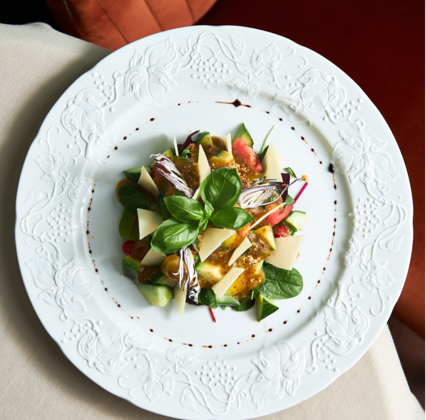
Овощной салат со спелыми томатами, хрустящими огурцами, авокадо, в сочетании с сыром Грана Падано и луковым крамблом под медово-горчичной заправкой.
Особенности:
⛔ без мяса |🥛 лактоза | чеснок |
чеснок |  лук | зелень | мёд
лук | зелень | мёд
Медово-горчичная заправка (мед, горчица).
Луковый крамбл (лук, сливки, чеснок).
Состав:
- Микс салата.
- Томаты узбекские.
- Огурец, авокадо.
- Медово-горчичная заправка: горчица зернистая, винный уксус, бальзамический уксус, мёд, масло оливковое.
- Сыр Грана Падано.
- Посыпается луковым крамблом (белый лук, грано подано, сливки, мука, чеснок, тимьян).
- Украшается бальзамическим кремом и зеленым базиликом.
Буррата с оливками и тартаром из сладких томатов
Сливочный сыр буррата с тартаром из сладких томатов, нежных оливок, лука шалот в сочетании с ароматной зеленью и маслом орегано.
Особенности:
⛔ без мяса |🥛 лактоза |  кинза |
кинза |  лук | зелень
лук | зелень
Томаты с луком шалот, кинзой и зеленым луком заправлены маслом орегано.
Украшается молекулярными оливками.
{kind=link}
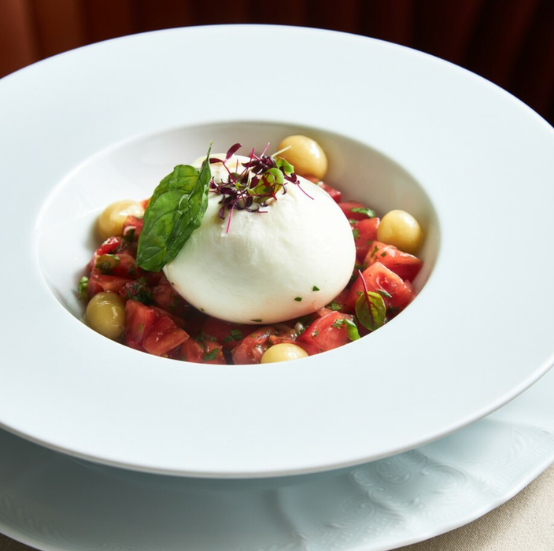
Состав:
- Томаты узбекские бланшируются и нарезаются кубиками, с добавлением зеленого лука, лука шалот, кинзы, заправляется маслом орегано.
- В середине сыр буррата.
- По краю на тартар выкладывают молекулярные оливки.
- Украшается чипсами из базилика.
Молекулярная кухня — направление современной кулинарии, возникшее в конце 20-го века. Основной «идеей» данного направления является то, что продукты в процессе приготовления меняются до неузнаваемости. Структура продуктов трансформируется настолько, что угадать, какой продукт перед Вами, можно только по вкусу.
🍲 Супы
Чечевичный суп с молодым ягненком, овощами и ароматными травами
Наваристый чечевичный суп с молочным ягненком, чечевицей, овощами и ароматными травами.
Особенности:
🌶️ острый |  кинза |
кинза | чеснок |
чеснок |  лук | зелень | эстрагон |
лук | зелень | эстрагон |
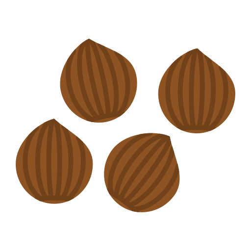
кориандрОчень ароматный, пряный и пикантный суп.
Бульон варится с добавлением лука.
Баранина готовится в Су-Вид с чесноком и луком.
Добавляется паста содержащая кинзу, фенхель, эстрагон и кориандр.
{kind=link}
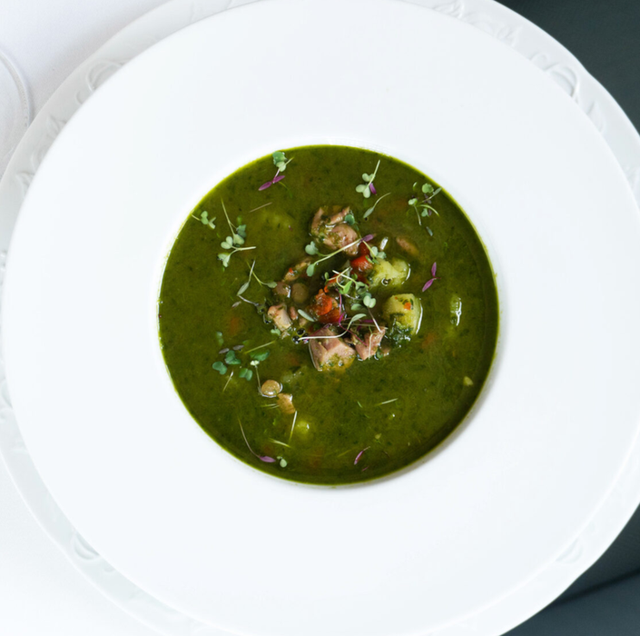
Состав:
- Наваристый говяжий бульон (лук, морковь, сельдерей, говядина).
- Баранина (в су-вид с луком, чесноком и розмарином).
- Картофель.
- Запеченный красный сладкий перец.
- Чечевица.
- Лук зеленый, кинза и паста (эстрагон, фенхель, кинза, кориандр).
Луковый суп с беконом, зирой под сырной корочкой Грюйер
{kind=link}
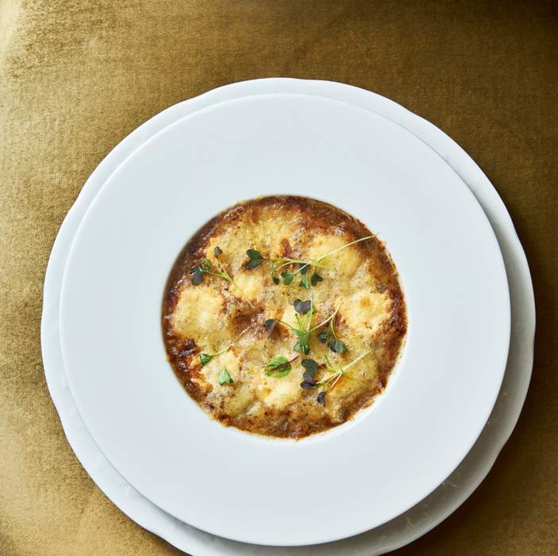
Авторская подача традиционного французского лукового супа с добавлением нежного бекона и ароматной зиры под сырной корочкой Грюйер.
Особенности:
🥛 лактоза | чеснок |
чеснок |  лук | свинина
лук | свинина
С добавление зиры и бекона. Убрать нельзя!
В составе лук репчатый, чеснок.
Состав:
- Куриный бульон, деми-глас.
- Шпик свиной, утиный жир, бекон.
- Лук репчатый.
- Чеснок, зира.
- Мука пшеничная.
На основу супа выкладывают гренки Пети Пан, посыпается натертым сыром Грюйер и запекают под саламандром до корочки.
Украшается веточкой тимьяна.
Французский луковый суп (soupe à l'oignon) — традиционное блюдо французской кухни, берёт начало ещё со Средневековья. В современном виде популярен с XVIII века. Готовится из карамелизованного лука, мясного бульона, вина и гренок, запечённых под слоем сыра (чаще грюйера). Блюдо отличается насыщенным вкусом, глубиной аромата и хрустящей сырной корочкой.
Острый суп Том Ям с гребешком и креветками
Тайский острый суп Том Ям в авторской интерпретации с королевским гребешком и креветками с добавлением грибов и ароматной зелени.
Особенности:
🌶️ острый |  кинза | 🍋 цитрусы |
кинза | 🍋 цитрусы |  чеснок |
чеснок |  лук | зелень | грибы
лук | зелень | грибы
Суп острый, сделать не острым нельзя.
Украшается перцем чили, кинзой и лаймом (можно убрать).
В составе супа перец чили, лук шалот, чеснок, лайм.
Подается с отварным рисом, который смягчает остроту супа.
{kind=link}
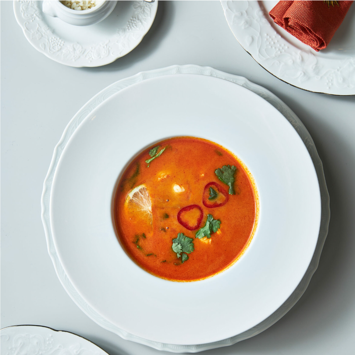
Состав:
- Куриный бульон, кокосовое молоко, рыбный соус, томатный соус, паста том ям.
- Морковь, сельдерей, томаты узбекские.
- Морской гребешок, креветка.
- Шампиньоны.
- Перец чили, лайм.
- Кинза.
Паста том ям:
- Корень галангала, перец чили, лук шалот, чеснок.
- Лемонграсс, листья лайма, лайм.
- На дно выкладываются морепродукты с овощами.
- Украшается ломтиком лайма, перцем чили, кинзой.
- Отварной рис подается отдельно.
- Креветка на украшение с хвостиком.
Том Ям — это популярный кисло-острый суп тайской кухни, который известен во всем мире. Название переводится как "варить острый салат" ("том" - варить, "ям" - острый салат). Классический том ям обычно содержит: креветки, курицу, рыбу, грибы, помидоры, лук, чеснок, имбирь, лемонграсс, листья лайма, перец чили и рыбный соус. Хотя существуют разные вариации, классический том ям часто готовят без кокосового молока и подают с рисом, который помогает смягчить остроту супа.
Уха с подкопчённой красной рыбой, овощами и сливочным бульоном
Авторская подача ухи с подкопчённой красной рыбой, овощами и сливочным бульоном.
Особенности:
🥛 лактоза |  лук | зелень | medium
лук | зелень | medium
Филе красной рыбы (подкопченое) - medium.
Можно сделать бульон без сливок.
Бульон также как и рыба подкопчённый.
{kind=link}
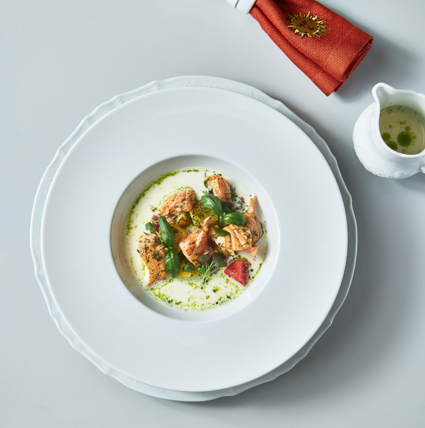
Состав:
- Филе красной рыбы (слегка подкопченное).
- Перец красный (опаляем горелкой), картофель (запекаем в соли), томаты.
- Укроп, базилик, перец.
- Базиликовое масло.
- Отдельно в сотейнике соединяют рыбный бульон и сливки.
Бульон рыбный:
- Кости копченого сибаса и дорадо (обжарены на хоспере).
- Лук репчатый.
- Белая часть лука порей.
- Стебель сельдерея.
- Семена гвоздики.
С тех пор, как люди начали готовить уху, рецептура этого блюда неоднократно менялась. Благодаря новым ингредиентам и технологиям приготовления, уха становилась все вкуснее и популярнее. В начале XIX века, в России появилась новая версия ухи, которая сегодня называется «уха со сливками».
Считается, что этот рецепт был придуман композитором Александром Сергеевичем Даргомыжским, который был известен своими необычными экспериментами в кулинарии. Для того чтобы приготовить уху со сливками, Даргомыжский использовал все те же ингредиенты, которые входят в стандартную рецептуру ухи: рыбу, картофель, лук, морковь и т.д., но добавил еще один ингредиент – свежие сливки.
Новый рецепт ухи был сразу же принят поварами и гурманами. С тех пор, как он появился, уха со сливками стала одним из самых популярных блюд на русской кухне. Это блюдо уже давно перекочевало за пределы России и стало известным во всем мире.
Шёлковый крем суп из каштанов с ароматными белыми грибами
Сливочный крем суп из каштанов с ароматными белыми грибами.
Особенности:
🥛 лактоза |  лук | грибы
лук | грибы
Небольшая сладковатость за счет каштанов. В составе лук и сливки.
Обжаренные белые грибы выкладываются на суп в качестве украшения, можно сделать без них.
Состав:
- Куриный бульон, сливки, сметана.
- Каштаны.
- Шампиньоны, белые грибы (обжаренные).
- Лук белый.
- Оливковое масло.
{kind=link}
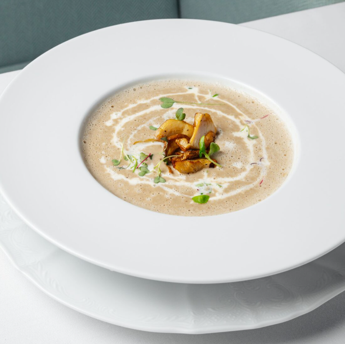
Каштан на протяжении веков занимал важное место в рационе европейцев. Уже в античности он рассматривался не только как лесной плод, но и как стратегический продукт питания. Известно, что во время отступления войска Александра Македонского из Малой Азии (401–399 гг. до н. э.) каштаны стали основой рациона воинов, обеспечив им выживание. Позднее полководец, стремясь укрепить продовольственную безопасность, повелевал высаживать каштановые деревья в завоёванных землях.
До появления в Европе картофеля каштаны во многих регионах, особенно в Италии, выполняли роль главного источника углеводов и были основой повседневного питания. Из них готовили каши, хлеб, сладости, но особое место занимали супы — питательные и сытные блюда, сохранявшие свойства продукта.
Каштановый суп получил широкое распространение в кулинарных традициях Италии и Франции. В Италии он чаще готовился в деревенской кухне как густой, насыщенный крем с добавлением овощей, иногда с pancetta или бульоном. Во Франции каштановый суп приобрёл более изысканный характер: его подавали в виде тонкого крем-супа, нередко с добавлением сливок и вина, что сделало блюдо частью ресторанной традиции.
Сегодня каштановый суп остаётся сезонным деликатесом в Европе, особенно в регионах, где сохраняется культура выращивания каштана. При этом Италия по-прежнему является крупнейшим производителем каштанов в Европе, тогда как Франция, известная туристическими образами уличных жареных каштанов, закупает значительную их часть у итальянских производителей.
Овощной суп Минестроне на курином бульоне с кедровыми орехами и соусом песто
Авторская интерпретация традиционного итальянского овощного супа Минестроне на курином бульоне с добавлением соуса песто, кедровых орехов и свежих овощей.
Особенности:
орехи | чеснок |
чеснок |  лук | зелень
лук | зелень
В суп добавляют красный лук и соус песто (базилик, кедровые орехи, чеснок, пармезан, оливковое масло).
Паста из маслин содержит чеснок.
Кедровые орехи - украшение для супа и гренок.
{kind=link}
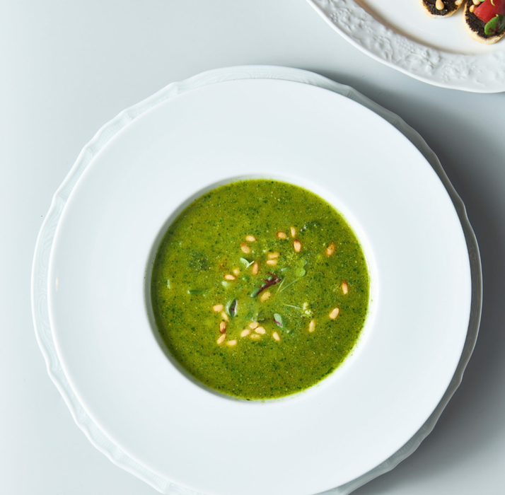
Состав:
- Куриный бульон.
- Картофель, морковь.
- Цукини, сельдерей.
- Брокколи, горошек зеленый.
- Фенхель, красный лук.
- Соус песто, масло оливковое.
К супу подаются гренки Пети Пан, их смазывают пастой из маслин (маслины, чеснок, оливковое масло).
Украшается томатами черри.
Суп и гренки украшаются кедровыми орехами.
Минестроне (итал. Minestrone, от minestra (суп) и -one (увеличительный суффикс), то есть «большой суп», суп со множеством ингредиентов) — это итальянский легкий суп, который часто описывают как "большой суп" из-за большого количества разнообразных ингредиентов. Обычно он включает в себя сезонные овощи, бобовые (фасоль, чечевица), макароны или рис, и готовится на овощном, реже на мясном, бульоне.
Постный минестроне на овощном бульоне с кедровыми орехами, чесночной чиабаттой и (постным) песто
Постный минестроне на овощном бульоне с кедровыми орехами в сопровождении хрустящей чиабатты и чесночного масла.
Особенности:
⛔ без мяса | орехи |
орехи |  чеснок |
чеснок |  лук | зелень
лук | зелень
Подается с чиабаттой с чесночным маслом.
Постный песто: базилик, кедровые орехи, чеснок, оливковое масло.
Состав:
- Овощной бульон.
- Картофель, морковь.
- Цукини, стебель сельдерея.
- Зеленый горошек, горох стручковый.
- Соцветия брокколи и цветной капусты.
- Спаржа.
- Лук репчатый, фенхель.
- Постный песто (без сыра).
- Кедровые орехи.
 Паста
Паста
Домашние равиоли с начинкой из фермерской курицы, ароматной зирой под сырно-трюфельным фондю
{kind=link}
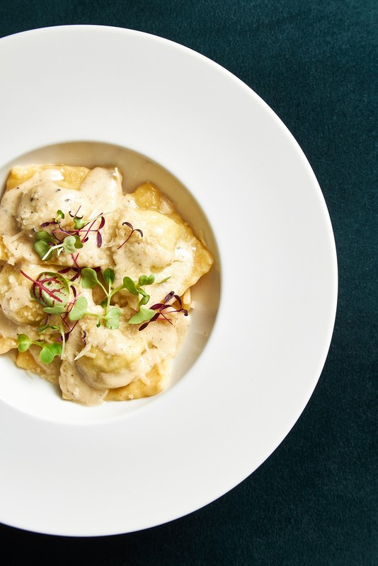
Домашние равиоли фаршированные мясом фермерской курицы с добавлением ароматной зиры, под сырно-трюфельным фондю.
Особенности:
🥛 лактоза | 🌶️ острый |  кинза |
кинза |  лук | зелень |
лук | зелень |  трюфель
трюфель
С добавлением зиры, кинзы, лука шалот и перца чили, под сырно-трюфельным фондю.
Компоненты из фарша убрать нельзя, соус можно.
Состав:
Тесто: мука пшеничная, яйцо, масло оливковое.
Фондю:
- Грана падано.
- Сливки.
- Желток.
- Паста трюфельная, масло трюфельное.
- Крахмал.
Фарш:
- Курица.
- Лук шалот.
- Кинза.
- Перец чили (не чувствуется).
- Говяжий жир.
- Зира.
Равиоли (итал. ravioli) — итальянские макаронные изделия из теста с различной начинкой. Изготавливаются из пресного теста в виде полумесяца, эллипса или квадрата с фигурным обрезом края. Начинка может быть мясной, рыбной, из птицы, овощей или фруктов.
Паста птитим с морепродуктами и кремом из зеленого горошка
Сливочная паста птитим в сочетании с обжаренными морепродуктами, авторским кремом на основе зеленого горошка и острым перцем чили.
Особенности:
🥛 лактоза | 🌶️ острый | 🍋 цитрусы |  лук
лук
Паста готовится с добавлением лука шалот.
Украшаем перцем чили, долькой лайма.
{kind=link}
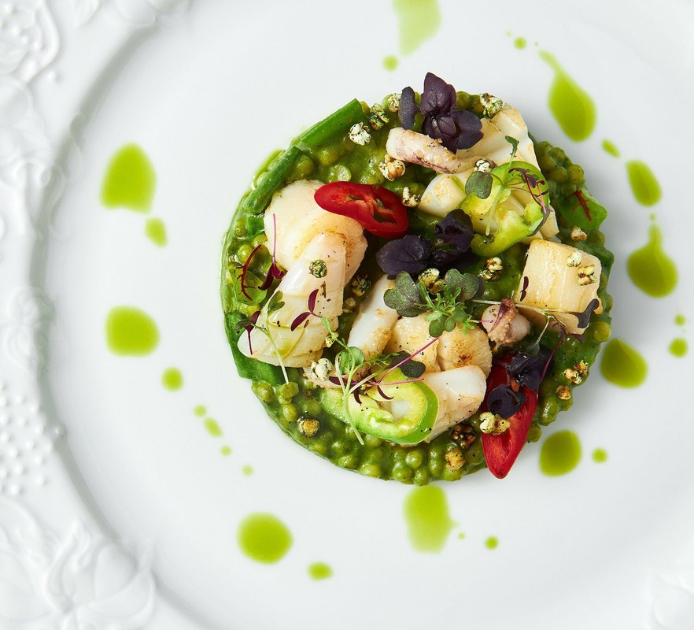
Состав:
- Отвариваем пасту птитим, смешиваем с луком шалот, кремом из горошка, стручковым горохом, помидорами, добавляем сыр Грана Падано.
- На получившуюся основу выкладываем обжаренные на сливочном масле морепродукты (гребешок и каракатица) и крем горошек (горох зеленый, шпинат, сливки, оливковое масло, рыбный бульон, ксантовая соль).
- Украшаем перцем чили и подаем с долькой лайма.
Птитим (ивр. פתיתים) — это небольшие макаронные изделия из твердых сортов пшеницы, которые часто называют израильским кускусом. Внешне напоминают маленькие шарики или рисовые зерна. Птитим был изобретен в Израиле и стал популярной альтернативой рису и кускусу. Он универсален в кулинарии, подходит для гарниров, салатов, супов и других блюд.
Черные фетучини с мясом краба, фенхелем и луком порей
Черные фетучини с мясом краба в нежном сливочном соусе в сочетании с ароматным фенхелем, луком порей, зеленью и сыром грана падано.
Особенности:
🥛 лактоза |  кинза |
кинза |  лук | зелень | коньяк
лук | зелень | коньяк
Паста с чернилами каракатицы (делаем сами) на сливочной основе, с добавлением большого количества фенхеля и лука порея.
Кинза, петрушка, чесночное масло.
Мясо краба фламбируется коньяком.
Украшается чипсами из красного лука.
Состав:
- Домашняя паста (мука, яйцо, чернила каракатицы) отваривается на курином бульоне до состояния al dente, затем обжаривается на оливковом масле.
- Фенхель, лук порей, мясо краба, фламбируется с коньяком.
- Добавляем кинзу, петрушку, чесночное масло и сливки 33%.
- В круглую тарелку выкладывается паста и основа с крабом, посыпается сыром грана падано.
- Украшается чипсами из красного лука и зеленого базилика.
{kind=link}
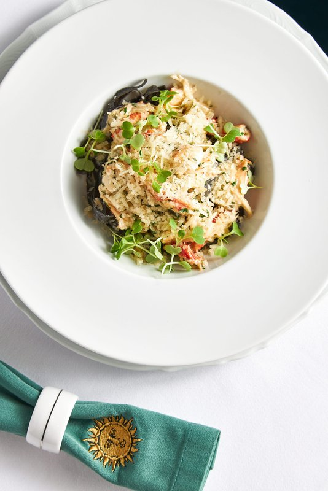
Фетучини (итал. fettuccine, от fettuccia — ленточка) — один из типов итальянской пасты, популярный в Риме, в виде тонких плоских полосок теста шириной около 7 мм: они похожи на тальятелле, от которых отличаются только большей шириной.
Аррабьята с креветками и гребешком
Пикантная паста спагетти с обжаренными креветками и гребешком, под соусом из узбекских томатов, с добавлением острого перца и ароматной зелени.
Особенности:
🌶️ острый | 🍋 цитрусы | чеснок | зелень
чеснок | зелень
По умолчанию пасту отдают не острую. Уточняем у гостя степень остроты и пишем комментарий на кухню.
Паста готовится с добавлением перца чили и чеснока.
Соус поке содержит также фреш лайма.
{kind=link}
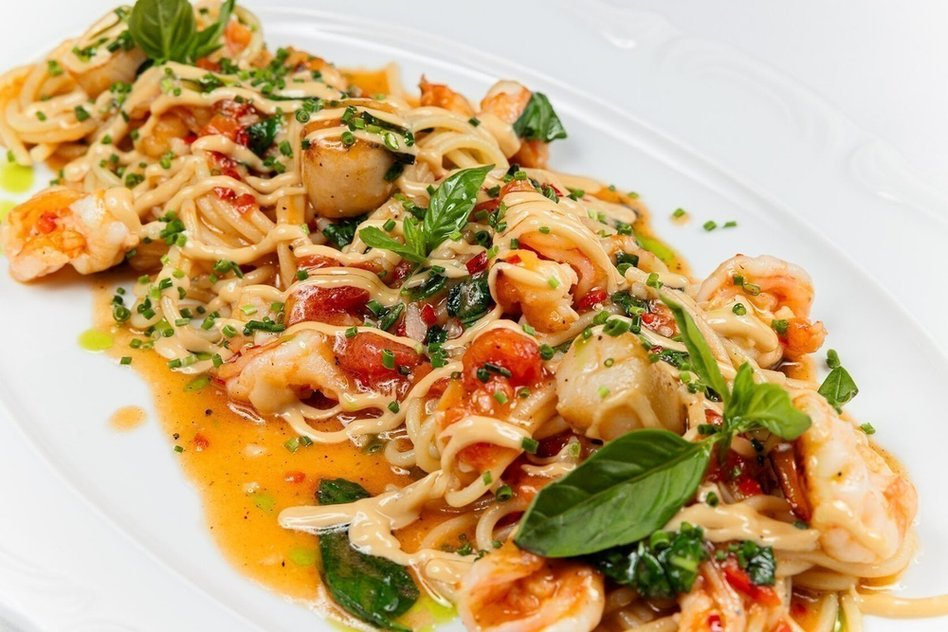
Состав:
- Гребешок и креветки обжариваются.
- Чеснок, перец чили обжариваются на оливковом масле.
- Добавляются спагетти, помидоры узбекские, листья базилика, соль, перец, соус поке ( домашний майонез, терияки, устричный соус, лайм, имбирь).
- Украшаем кресс-салатом и зелёным маслом.
Аррабьята (итал. arrabbiata, от итал. arrabbiato — «сердитый») - это популярное итальянское блюдо, представляющее собой пасту (обычно пенне) в остром томатном соусе. Название "Arrabbiata" в переводе с итальянского означает "сердитый" или "злой", что намекает на остроту соуса, приготовленного из перца чили, чеснока и помидоров.
Ризотто с кроликом и грибами
Сливочное ризотто с нежным кроликом, ароматными белыми грибами и кедровыми орехами.
Особенности:
🥛 лактоза | орехи |  лук | грибы
лук | грибы
Мясо кролика обжаривают с добавлением лука шалот.
Сливочный соус, грибы.
Украшаем кедровыми орехами. В состав песто так же входят кедровые орехи. Все можно убрать.
Подается с сыром Грана Падано.
Состав:
- Мясо кролика обжариваем на оливковом масле с добавлением лука шалот.
- Добавляем белые грибы, база ризотто (рис арборио, куриный бульон, белое вино, лук шалот), соус песто, грана падано, сливки, тимьян.
- Украшается фиолетовым базиликом, кедровыми орехами, тимьяном, обжаренными белыми грибами и сыром грана падано.
{kind=link}
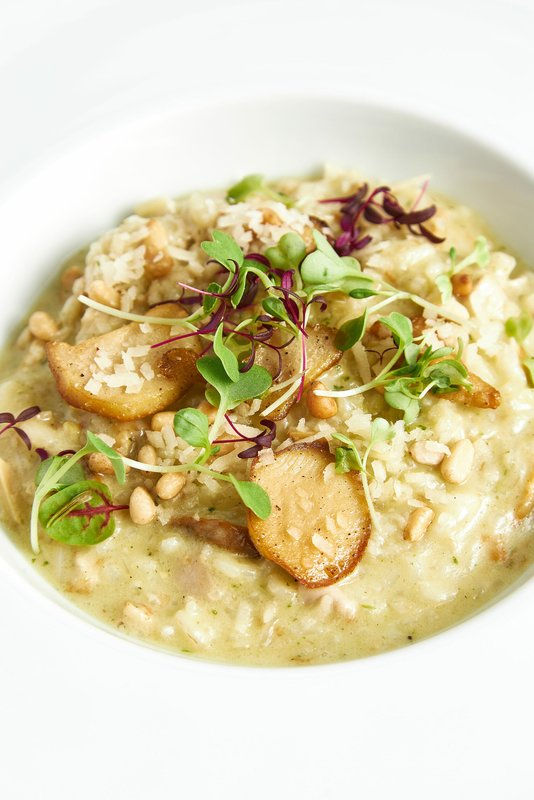
Ризотто (итал. risotto, означает «маленький рис») - это итальянское блюдо из риса, которое отличается кремообразной текстурой. Для его приготовления используется специальный сорт риса, например, арборио, и особый способ приготовления, включающий обжарку риса, добавление вина и постепенное вливание бульона при постоянном помешивании. В конце приготовления добавляют сливочное масло и сыр, чаще всего пармезан, для достижения желаемой кремовости.
Зеленое ризотто
{kind=link}
Состав:
- В обжаренные рис с луком шалот добавляем овощной бульон, тушим до полуготовности.
- Обжариваем горох стручковый, затем добавляем пюре цукини (цукини , чеснок, базилик, петрушка, соль, перец), спаржу и шпинат.
- Смешиваем с ризотто, добавляем зелёный горох, специи и тушим до готовности.
Подача:
- Выкладываем пюре из цукини, соус красный (перец красный сладкий, овощной бульон, соль, перец).
- Цукини нарезаем на слайсере, ошпариваем и обвалакиваем ризотто слайсами цукини.
- Украшаем микрозеленью.
🍖 Горячие блюда из мяса
Говяжье ребро под соусом из черного перца с картофелем, бататом и соусом чимичури
Нежное мраморное говяжье ребро под ароматным соусом из черного перца, запечённым бататом и картофелем под пикантным соусом чимичури (без кости).
Особенности:
🌶️ острый |  кинза | 🍋 цитрусы |
кинза | 🍋 цитрусы | чеснок |
чеснок |  лук | зелень
лук | зелень
Ребро без кости готовится методом су-вид с добавлением овощей, трав, лука и чеснока. Затем глазируют соусом из черного перца.
В батат и картофель добавляют измельченный лук резанец и мяту, украшают кинзой и укропом. Заправляют соусом поке, содержащим чеснок, устричный соус, фреш лайма.
Соус чимичури пикантный с добавлением кинзы, чеснока, лука и халапеньо.
{kind=link}
Состав:
- Ребро готовим в су-вид с овощами (морковь, лук, чеснок, лемонграсс, корень имбиря, тимьян, розмарин) и с соевым соусом.
- Далее мясо обмазывают соусом из черного перца и прогревают под саламандром.
- Батат и картофель запекают с морской солью, добавляют соус поке, листья мяты, измельченный лук резанец и каперсы.
- На гарнир выкладываем укроп, кинзу, микрозелень.
- Рядом соус чимичури (кинза, петрушка, шалот, чеснок, масло оливковое, халапеньо).
Соус из черного перца:
- перец черный горошком
- соевый соус
- овощной соус
- белое сухое вино
- куриный бульон
- масло сливочное
- сахарный песок
Соус Поке:
- Айоли (майонез, чеснок).
- Устричный соус.
- Фреш лайма.
- Терияки соус.
- Имбирь.
Су-вид (фр. sous-vide, «под вакуумом») - это метод приготовления пищи, при котором продукты помещаются в герметичные пакеты и готовятся в водяной бане при точной, низкой температуре в течение длительного времени. Эта технология позволяет добиться равномерного приготовления продукта, сохраняя его соки, вкус и текстуру.
Бифштекс из мраморной говядины с жаренным картофелем, грибами и шпинатом, с муссом из горгонзолы и трюфельным кремом
{kind=link}
Сочный бифштекс из мраморной говядины с золотистым картофелем, ароматными белыми грибами и шпинатом, в сочетании с воздушным муссом из горгонзолы и трюфельным кремом.
Особенности:
🥛 лактоза |  лук | зелень | грибы |
лук | зелень | грибы |  трюфель | medium
трюфель | medium
{kind=link}
Прожарка котлеты medium.
В составе гарнира белые грибы и шпинат.
Крем с добавлением сливок, трюфельной пасты и грибов.
Мусс из горгонзолы.
Состав:
- Котлету на бифштекс из говядины обжариваем на хоспере до готовности (прожарка медиум).
- Гарнир: отварной картофель обжариваем на оливковом масле с белыми грибами, шампиньонами и шпинатом.
- Подаём с трюфельным кремом (шампиньоны, лук репчатый, сливки, масло трюфельное, паста трюфельная, майонез домашний, куриный бульон) и муссом из горгонзолы (горгонзола, сыр грана падано, сливки, молоко, куриное яйцо).
- Украшаем луком резанец и микрозеленью.
Хоспер (Josper) — это профессиональная печь-гриль, совмещающая в себе функции гриля и печи, работающая на древесном угле. Она предназначена для приготовления блюд при высоких температурах, придавая им характерный аромат дыма. Хоспер позволяет не только жарить продукты на решетке, но и запекать, тушить их в чугунной посуде или гастрономических емкостях. Также он обеспечивает высокую скорость приготовления, сохранение сочности и аромата продуктов, а также позволяет достичь идеальной прожарки.
Устройство называют хоспером, поскольку первые виды кухонного оборудования были выпущены испанской фирмой Josper S. A., основателями которой были Хосеп Арманхэ и Пере Хули. Название они придумали, просто сложив свои имена: Josep и Pere. Так и появилась фирма JOSPER. Название стало нарицательным для подобных устройств, и многие производители теплового оборудования используют его для обозначения закрытых угольных печей, предназначенных для приготовления мясных и рыбных блюд.
Томленые говяжьи щечки с рагу из белых грибов, картофелем пюре и солодовым соусом
Томленые говяжьи щечки с рагу из белых грибов, воздушным картофелем пюре и авторским солодовым соусом.
Особенности:
🥛 лактоза |  лук | зелень | вино | грибы
лук | зелень | вино | грибы
Говяжьи щёчки готовятся методом су-вид, томятся в соусе с солодом и соевым соусом.
Белые грибы в соусе на основе демиглас, сливок и шалфея, с добавлением лука.
Украшаем микрозеленью и луком резанец.
{kind=link}
Состав:
- Говяжьи щёчки приготовленные в су-вид, томятся в соусе солод.
- Подаём с картофельным пюре с добавлением жженого масла, обжаренными белыми грибами в соусе шалфей, попкорном из риса неро и зелёным маслом.
- Украшаем микрозеленью и луком резанец.
Соус солод:
- солод
- куриный бульон
- соевый соус
- овощной соус
- белое вино
- сливочное масло
- сахар
Соус шалфей:
- шалфей
- лук
- демиглас
- сливки
- белое вино
- оливковое масло
Говяжьи щечки - мышцы, расположенные на лицевой части головы коровы, которые животное использует для пережевывания пищи. Так как это работающие мышцы, они содержат много соединительной ткани и для достижения мягкости требует длительного тушения или томления. Мясо, которое при правильном приготовлении становится очень нежным и сочным, благодаря высокому содержанию коллагена.
Филе миньон с Фуа-гра, жаренными белыми грибами и овощами на гриле
{kind=link}
Состав:
- Филе миньон обжаривается на хоспере (на подсолнечном масле) до прожарки медиум.
- Фуа-гра (террин) обжаривается без масла.
- Мясо и фуа-гра поливаем мясным соусом (фуа-гра, утиный жир, деми-глас, куриный бульон, сливки, трюфельное масло).
- Овощи и грибы обжариваются на оливковом масле.
1. Морковь.
2. Томаты черри.
3. Перец красный и зеленый.
4. Цукини.
5. Мини кукуруза.
6. Грибы белые.
Турнедо Россини (фр. Tournedos Rossini) — блюдо французской кухни из говяжьей вырезки. Из средней части вырезки нарезают небольшие округлые стейки, которые во Франции называют «турнедо». Разновидностью турнедо являются медальоны. Турнедо обжаривают на сковороде в масле. Подают на тосте (крутоне) с ломтиком свежей фуа-гра сверху, слегка обжаренным на сковороде. Блюдо украшается ломтиками чёрного трюфеля и завершается соусом Мадера на основе мадеры (крепленое вино родом из Португалии).
Блюдо названо в честь композитора Джоаккино Россини. Авторство блюда является предметом споров.
Происхождение названия «турнедо» связывают с французской фразой «turner le dos» — «поворачиваться спиной». С этой версией существует несколько легенд. Так, когда композитор готовил блюда для своих гостей, он якобы при этом поворачивался к ним спиной, чтобы закрыть от их взглядов секреты процесса приготовления. По другой версии «...происхождение турнедо связано с заказом Россини (с фуа гра и трюфелями), столь удивительным в глазах метрдотеля в тот момент, что он передал блюдо «за спинами» гостей».
Также, пожелав, чтобы приготовление происходило в столовой, чтобы он мог наблюдать за процессом, Россини, якобы, к изумлению повара ответил: «Ну, повернись на другую сторону, повернись ко мне спиной! (фр. … tournez-moi le dos!)». Таким образом, говяжье филе получило название tournedos.
Чёрный бургер с котлетой из мраморной говядины, сыром камамбер, луком конфи и острым перцем халапеньо
Чёрный бургер с сочной котлетой из мраморной говядины, сливочным сыром камамбер, луком конфи и острым перцем халапеньо.
Особенности:
🥛 лактоза |🌶️ острый |  лук | грибы | medium | кунжут | виски
лук | грибы | medium | кунжут | виски
Прожарка котлеты medium.
Перец халапеньо, лук конфи с виски, сухой лук.
Булочка с добавлением чернил каракатицы и кунжута.
Камамбер можно заменить на чеддер за доп. плату.
Можно приготовить не острый.
Предлагаем гарнир.
Сервируем перчатки и ошибори.
{kind=link}
Состав:
- Черную булочку (кунжут, чернила каракатицы) разрезают вдоль. Нижнею половину смазывают соусом Коктейль (дом майонез, барбекю, ворчестер), добавляют лук конфи с виски и белыми грибами. Вторую булочку смазываем соусом коктейль (и накрывают бургер).
- Малосольные огурцы.
- Перец халапеньо.
- Котлета медиум.
- Лук жареный сухой.
- Сыр камамбер.
- Ставим в jоsper до расплавления сыра.
Камамбе́р (фр. camembert) — сорт мягкого жирного сыра, изготавливаемый из коровьего молока и называемого младшим братом сыра Бри. Имеет цвет от белого до светло-сливочного. Имеет нежный, чуть грибной вкус. Снаружи камамбер покрыт корочкой, образованной культурой грибов, поверх которой растёт белая плесень Penicillium camemberti. Это один из тех сортов сыра, которые могут считаться по-настоящему народными во Франции. Более того, специфический насыщенный запах камамбера вдохновлял французских писателей и художников, оставив заметный след во французской литературе и искусстве.
Название "Камамбер" происходит от нормандской деревни Camembert, где крестьянка Мари Арель в конце XVIII века впервые изготовила этот мягкий сыр, привнеся в старый рецепт региональные особенности. Сыр был представлен французскому императору Наполеону III в 1863 году, и с тех пор название деревни закрепилось за продуктом, ставшим деликатесом.
Томленая голяшка ягненка с печеным баклажаном и йогуртовым муссом
{kind=link}
Состав:
- Голяшка маринуется (морковь, сельдерей, томаты, лук, горчица, мед, чеснок, розмарин, барбарис).
- Готовится методом су-вид, затем подогревается на хоспере.
- Баклажан готовится на хоспере.
- Соус йогуртовый (йогурт, майонез, сливки, эстрагон).
Фермерский цыпленок приготовленный на открытом огне
{kind=link}
Утиная ножка под апельсиновым соусом на подушке из жареного картофеля с беконом
{kind=link}
Состав:
- Утиная ножка отваривается в апельсиновом соке.
- Обжаривается на оливковом масле с морковью и луком с добавлением бальзамика, карамеллизированного сахара, морской соли и апельсинового сока.
- Выкладываем ножку на картофель с беконам и луком шалот, обжаренных на оливковом масле с добавлением зелени и чеснока.
- Поливаем соусом, в котором обжаривалась ножка. Украшаем чипсой из апельсина.
Котлета из утиной грудки с фуа-гра и картофельным пюре с зеленью и соусом барбекю
{kind=link}
Состав:
Фарш:
- Утиная грудка, фуа-гра.
- Морковь, лук шалот, чеснок.
- Кинза, петрушка, тимьян.
- Хлеб, молоко, яйцо.
Картофельное пюре:
- Картофель, масло сливочное, сливки.
- Кинза, петрушка.
Соус Барбекю.
Горячие блюда из рыбы и морепродуктов
Филе сибаса со шпинатом, картофельным пюре с зеленью и цитрусовым соусом
{kind=link}
Состав:
- Сибас (без костей) запекается со шпинатом.
- Подается с картофельным пюре с зеленью (кинза, лук зеленый) и цитрусовым соусом (лимон, лайм, томат, зеленое масло, лук зеленый, кинза).
- Украшаем укропом, красным луком, перец и соль.
Филе дорадо на подушке из жаренных овощей и грибов со сливочным соусом берблан
Запечённое филе дорадо на подушке из глазированных овощей и грибов со сливочным соусом берблан.
Особенности:
🥛 лактоза |🌶️ острый |  лук | вино | грибы
лук | вино | грибы
Гарнир с добавлением древесных грибов.
Соус бер блан подается отдельно.
Состав:
- Баклажаны (мелким кубиком) в кукурузном крахмале обжариваем во фритюре, глазируем соусом свит чили с добавлением устричного соуса.
- Добавляем томаты, древесные грибы.
- Выкладываем гарнир, сверху запеченное филе дорадо с кожей.
- Украшаем листьями салата
- Отдельно подаем соус бер блан.
Соус бер блан:
- лук шалот, масло сливочное
- белое вино, рыбный бульон, винный уксус, сливки.
- тимьян.
{kind=link}
Стейк из семги, запечённой в меде с картофельным пюре и томатной сальсой
{kind=link}
Сочный стейк семги, запеченный в меде в сочетании с картофельным пюре с зеленью и яркой сальсой из томатов и маслин.
Особенности:
🥛 лактоза | 🍋 цитрусы | орехи |  лук | зелень | мёд | medium
лук | зелень | мёд | medium
Семга (с кожей, без костей) прожарки медиум, запекается в меде.
В пюре добавляется зелень и лимонный фреш.
Сальса с маслинами заправляется маслом лесного ореха.
Состав:
- Семга маринуется в соевом соусе с добавлением соли, перца, затем смазывается медом и запекается в конвектомате до золотистой корочки.
- Сальса из томатов: помидоры узбекские, кинза, петрушка, базилик, лук шалот, тимьян, маслины по тажарски. Заправляется маслом лесного ореха.
- Картофельное пюре с укропом и лимонным фрешом.
- Украшается чипсами красного лука, листьями зеленого и фиолетового базилика.
Запеченная черная треска с маринованным имбирем и жаренными овощами под медово-апельсиновым соусом
{kind=link}
Состав:
- Филе черной трески маринуется в соли. Далее обжаривается с соевым соусом, оливковым маслом и доготавливаем в конвектомате.
- Филе выкладывается на лист бамбука, сверху маринованный имбирь и укроп.
- На оливковом масле, обжаривается стручковый горох, картофель черри, мини морковь, мини кукуруза, спаржа. В готовые овощи, добавляется лук резанец, виноградное масло. Овощи выкладываются рядом с треской.
- Гарнир поливается апельсиновым соусом.
Апельсиновый соус:
- Апельсиновый фреш.
- Мед.
- Паста том ям.
- Паста мисо красная.
- Соевый соус, мирин.
- Имбирь.
Черная треска, также известная как угольная рыба или масляная рыба, на самом деле не является видом трески. Это глубоководная рыба, обитающая в северной части Тихого океана. Она получила свое название из-за своего черного цвета, поскольку живет на большой глубине, где мало света, а также из-за сходства с треской. Мясо черной трески белое, богато жирными кислотами омега-3, практически без костей, сладковатое, в меру жирное, сочное. Оно ценится за нежнейший вкус и тонкий аромат. По вкусу рыба словно нежнейший бархат, по структуре мяса – напоминает треску, по жирности – синекорого палтуса. Жира в мясе – всего лишь 16-17%, но особенность заключается в том, что он равномерно распределен по всей длине. Если рыбу правильно приготовить, она будет таять во рту, как нежнейший крем.
Глазированный осьминог с жаренным картофелем, вялеными томатами и ростками подсолнуха
{kind=link}
Щупальца жаренного осьминога, глазированного соусом свит чили в сочетании с золотистым картофелем, вялеными томатами, ростками подсолнуха и пикантным чимичури.
Особенности:
🥛 лактоза | 🌶️ острый |  кинза | 🍋 цитрусы |
кинза | 🍋 цитрусы | чеснок |
чеснок |  лук | | вино | зелень
лук | | вино | зелень
Щупальца отваривают в бульоне с добавлением белого вина, глазируются соусом свит чили.
Гарнируется овощами в соусе поке с чесноком, фрешем лайма.
Отдельно выкладывается пикантный соус чимичури с кинзой, луком шалот, чесноком и халапеньо.
Состав:
- Картофель прогретый во фритюре с вяленными томатами, луком резанец, в соусе поке (айоли (майонез, чеснок), устричный соус, фреш лайма, терияки, имбирь).
- Щупальца осьминога отваривают (с добавлением белого вина), затем прогреваются на сковороде и перед подачей смазывается глазурью (устричный соус, свит чили).
- Ростки подсолнуха, листья салата.
- Тапиока посыпается сверху. Рядом соус чимичури (кинза, петрушка, лук шалот, чеснок, масло подсолнечное, халапеньо).
Тапиока - это крахмал, получаемый из корней тропического растения маниока (кассавы), произрастающего в Южной Америке и других тропических регионах. Обычно продается в виде небольших шариков (жемчужин), которые после варки становятся прозрачными и мягкими. Тапиока используется в кулинарии как загуститель, в качестве заменителя муки, а также в напитках, таких как бабл-ти.
Котлета из ассорти рыб с картофельным пюре и томленым шпинатом
Нежная котлета из рыбного ассорти с воздушным картофельным пюре и томленым шпинатом.
Особенности:
🥛 лактоза | 🍋 цитрусы |  лук | зелень
лук | зелень
В котлету и пюре добавляется лимонный фреш.
Пюре подается со шпинатом.
В составе котлеты лук шалот, кинза, сливки.
Связующим звеном в котлете выступает гребешок. Хлеб не добавляем.
Состав:
- Котлета обжаривается на оливковом масле, доготавливается в конвектомате.
- Выкладываем картофельное пюре (с добавлением лимонного фреша) с ошпаренным шпинатом.
- Украшаем пюре креветкой, тарелку каплями желтого перца и зеленого масла, подаем с долькой лимона.
Котлета:
- Фарш из семги, судака, сибаса, дорада и морского гребешка.
- Лук шалот.
- Укроп, кинза, лук резанец.
- Сливки, лимонный фреш, масло оливковое.
{kind=link}
🥩 Мясо по весу (Josper/ Пар / Сковорода)
Чем отличаются между собой классические стейки от альтернативных?
Отличаются они тем из какой части туши берутся - от этого зависит мягкость мяса, количество жировых прослоек, насыщенность вкуса и аромата. Премиальные стейки (их всего 3: рибай, филе-миньон, стриплойн) берут из наименее нагруженных мышц, они мягкие, мраморные и нежные, готовятся быстро и стоят дороже. Такие мышцы занимают всего 10-12% туши, и именно поэтому так ценятся. Альтернативные стейки (остальные части туши: фланк, скерт и тд.) — из более “рабочих” частей, таких, где мышцы при жизни более нагружены и напряжены, сокращались при движении. Поэтому и структура мяса не так нежна, по сравнению с премиальными стейками. Впрочем, альтернативные стейки не уступают классике во вкусовых качествах, скорее в способе получения и структуре мяса. Следовательно, их немного тяжелее готовить, ведь нужно помнить о том, что нужно смягчить мясо — отбить или промариновать.
Денвер стейк (лопаточная часть)
Сочный мраморный кусок говядины из верхней части лопатки, с ярко выраженным мясным вкусом, насыщенной текстурой и деликатной прожаркой, которая раскрывает сладковатые ноты и богатый аромат жареного мяса.
Особенности:
Вес от 250 гр.
Соль, перец.
Альтернативный стейк. Мясо с более выраженной текстурой и плотными волокнами, чем у классических стейков. При небольшой степени прожарки сохраняет упругость, а при сильной — становится более сухим.
Идеальная прожарка medium.
Предлагаем гарнир и соус.
Говядина - Россия. Поставщик Прайм Биф. Кукурузный откорм, сухое вызревание.
{kind=link}
Филе прайм (Говяжья вырезка)
Утончённый стейк из самой нежной части говяжьей вырезки, обладающий бархатистой текстурой, выраженной сочностью, со слегка сладковатым сливочным вкусом.
Особенности:
Вес от 250 гр.
Соль, перец.
Самый диетический стейк. Почти не содержит жира, очень нежный, обладает тонким ароматом, буквально тает во рту.
Предлагаем гарнир и соус.
Говядина - Россия. Поставщик Прайм Биф. Кукурузный откорм, сухое вызревание.
{kind=link}
Стейк Денвер (steak denver) (лопаточная часть) — альтернативный стейк, выделяемый из шейно-лопаточной области бычка. Он известен своей высокой мраморностью, сочностью и нежной текстурой, что приближает его по качеству к премиальным отрубам, таким как Стриплойн или Рибай. Этот стейк, благодаря своему расположению и особенностям строения мышц, не подвергается сильной нагрузке в процессе жизнедеятельности животного, что и обеспечивает его нежность.
Говяжья вырезка — премиальный отруб, расположенный вдоль позвоночника в поясничной части туши. Так называемая «ленивая» мышца, не несущая никакой нагрузки, поэтому это самая мягкая и постная часть говядины, в ней очень мало соединительной ткани и жира. Отличается нежной текстурой, тонким вкусом и высокой ценностью. Используется для приготовления стейков филе-миньон, шато-бриан, торнедо.
Так как ярким вкусом эта часть туши не отличается, кулинары подают блюда из вырезки в соусе или готовят мясо в полосках бекона, а также применяют маринад для придания вкуса. Лучший вкус имеет филе-миньон бычков мясных пород зернового откорма.
Для приготовления вырезки требуется вдвое меньше времени, чем для больших стейков. Стейк почти никогда не готовят «с кровью» (rare), но, как правило, подают менее прожаренным, чем другое мясо.
В современной мясной промышленности есть 2 основные технологии выдержки мяса:
Сухое вызревание мяса (dry-aging) — это процесс подготовки мяса, в основном мраморной говядины, в котором мясо выдерживается в специальных камерах с контролируемой температурой (от 0 до 2 °C), влажностью (75 - 85 %) и циркуляцией воздуха. Продолжительность выдержки может варьироваться от 14 до 120 дней (в среднем 30 дней), в зависимости от желаемого результата. В процессе выдержки мясо теряет влагу, что концентрирует его вкус. Ферментация, вызванная бактериями и грибками, делает мясо более нежным и мягким, с характерными ореховыми, сливочными и сырными нотками.
Влажное вызревание мяса (wet-aging) — более современная технология. Она появилась, когда придумали вакуумную упаковку. Собственно, в ней-то все и дело. Отруб говядины помещают в вакуумный пакет, что позволяет сохранить влагу внутри. Процедура протекает быстрее, чем при сухой выдержке. На влажное вызревание требуется от нескольких дней до двух недель. Говядина становится мягкой, сочной и при этом мало теряет в весе. Впрочем, процесс продолжается, даже когда отруб в вакууме лежит у вас в холодильнике. Поэтому лучше всего приобретать мраморную говядину, у которой подходит срок годности — такое мясо будет наиболее мягким и сочным.
Рибай стейк
{kind=link}
Сочный премиальный стейк Рибай из бычков зернового откорма, с нежной и мраморной структурой, лёгкой дымной нотой и насыщенным мясным вкусом.
Особенности:
Вес от 250 гр.
Соль, перец.
Самый жирный из классических стейков. Равномерное распределение жировых прослоек, насыщенный вкус и аромат, сочная и нежная структура мяса.
Рекомендуемая прожарка medium.
Предлагаем гарнир и соус.
Говядина - Россия. Поставщик Прайм Биф. Кукурузный откорм, сухое вызревание.
Рибай (англ. ribeye (англ. rib «ребро» + eye «глаз») — наиболее известный стейк в мире. Для приготовления используется толстый край отруба строго между 5-м и 12-м ребрами. Отруб находится на пересечении 6 мышц, которые наименьшим образом задействованы в движении животного. Все это имеет принципиальное значение для вкусовых качеств стейка: множество жировых прослоек тают при приготовлении стейка, смягчая мышечные волокна, и мясо получается необычайно сочным, приобретая неповторимый утонченный вкус.
Классический рибай принято готовить из мраморной говядины зернового откорма. Повара рекомендуют для стейка рибай среднюю степень прожарки — medium или medium well.
Стриплойн стейк
Сочный стейк Стриплойн из мраморной говядины, приготовленный на открытом огне. Стейк с выразительным мясным вкусом и тонкой жировой прослойкой, придающей ему насыщенность и мягкость. Идеальный выбор для ценителей классических стейков с богатым вкусом и деликатной текстурой.
Особенности:
Вес от 250 гр.
Соль, перец.
Классический стейк средней жирности немного вытянутой формы. По периметру стейка проходит тонкая полоска жира. Во время приготовления она защищает мясо от просушивания, придает ему сочность.
Рекомендуемая степень прожарки — medium rare.
Предлагаем гарнир и соус.
Говядина - Россия. Поставщик Прайм Биф. Кукурузный откорм, сухое вызревание.
{kind=link}
Стриплойн (англ. strip + loin «филейная полоса») — премиальный стейк, вырезаемый из тонкого края поясничной части говяжьей туши после 12 ребра — именно здесь оно обладает нужной структурой и плотностью. Первоначально стейк назывался «Нью-Йорк», в честь своей малой родины, название «Стриплойн» появилось позже. Особенностью этого стейка является то, что по периметру проходит тонкая полоска жира, придающая мясу сочность.
Наиболее богатыми вкусовыми качествами обладает стриплойн из мраморной говядины зернового откорма. Мышечные ткани такой говядины предрасположены к появлению тончайших жировых прослоек (мраморности), которая является залогом прекрасного вкуса и неповторимого тонкого аромата.
Повара рекомендуют для стейка стриплойн слабую степень прожарки — rare или medium rare.
Основные отличия стейков Стриплойн и Рибай слудущие:
- Стейки Рибай и Стриплойн отрезаются с разных сторон одного куска – спинной мышцы бычков: толстый край (рибай) и тонкий край (поясничная часть туши) (стриплойн).
- Рибай имеет максимальное количество мраморных прожилок и они рапределены равномерно, что делает готовое блюдо очень сочным. Структура же стейка Стриплойн более плотная, в нем меньше мраморных прослоек, а один из краев стриплойна окаймлен толстым жировым слоем, благодаря которому деликатес хорошо пропитывается соком при жарке.
- Благодаря повышенному содержанию жира рибай сложно пересушить, поэтому его рекомендуют доводить до стадии medium или medium Well. Стриплойн лучше жарить не более 1-2 минут, получая продукт степени Rare либо Medium Rare. Гурманы обычно не приветствуют добавление в него ароматных приправ – вполне достаточно соли и стандартного черного перца. А вот дополнить аромат Рибая вполне можно с помощью тимьяна или чеснока.
Каре баранины
Особенности:
Соль, перец.
Возраст от 1-1,5 года.
Мясо сочное за счет жировых прослоек, нежное, но жестче, чем ягненок.
Имеет яркий аромат.
Предлагаем гарнир и соус.
Каре баранины - Россия, Северный Дагестан.
Каре ягнёнка
{kind=link}
Срез нежнейшего мяса молодого ягненка на изящных рёбрышках, приготовленный на открытом огне.
Особенности:
Соль, перец.
Возраст до 6-8 месяцев, травяной откорм.
Мясо очень нежное.
Не имеет специфического запаха баранины.
Минимальная жировая прослойка.
Предлагаем гарнир и соус.
Каре ягнёнка - Россия , Калмыкия.
Есть ли кровь в "стейке с кровью?" Спойлер: нет! Кровь из туши выпускают сразу после забоя. Крови не должно быть в мясе в принципе. А что есть? Мясной сок есть розового цвета, который не успел поменять цвет под действием температуры. Если жарить дольше, то мясо изменит цвет по всей толщине куска. Красный цвет мяса - не от гемоглобина (который в крови), а от похожего на него миоглобина (который в мясе). Поэтому это скорее эффектный термин, обозначающий неполную прожарку мяса, при которой внутри сохраняется розовый сок.
🐙 Рыба и морепродукты по весу (Josper/ Пар / Сковорода)
Семга
Вес от 190 гр.
Уточняем у гостя:
- Количество филе.
- Способ приготовления: Josper/ Пар / Сковорода.
- С добавлением соуса (или без):
- коньячно-чесночный (коньяк, чеснок, лимонный фреш, оливковое масло).
- чесночный (чеснок, сливочное масло, зелень).
Сибас
Вес от 130 гр.
Уточняем у гостя:
- Количество филе.
- Способ приготовления: Josper/ Пар / Сковорода.
- С добавлением соуса (или без):
- коньячно-чесночный (коньяк, чеснок, лимонный фреш, оливковое масло).
- Чесночный (чеснок, сливочное масло, зелень).
Дорадо
Вес от 130 гр.
Уточняем у гостя:
- Количество филе.
- Способ приготовления: Josper/ Пар / Сковорода /Гриль.
- С добавлением соуса (или без):
- коньячно-чесночный (коньяк, чеснок, лимонный фреш, оливковое масло).
- чесночный (чеснок, сливочное масло, зелень).
Тунец
Вес от 100 гр.
Уточняем у гостя:
- Количество филе.
- Способ приготовления: Josper/ Пар / Сковорода.
- С добавлением соуса (или без):
- коньячно-чесночный (коньяк, чеснок, лимонный фреш, оливковое масло).
- чесночный (чеснок, сливочное масло, зелень).
Кальмар
Вес от 100 гр.
Уточняем у гостя:
- Вес (кратный 100).
- Способ приготовления: Josper/ Пар / Сковорода.
- С добавлением соуса (или без):
- коньячно-чесночный (коньяк, чеснок, лимонный фреш, оливковое масло).
- чесночный (чеснок, сливочное масло, зелень).
Осьминог
Вес одного щупальца примерно 80-100 гр.
Уточняем у гостя:
- Вес (кратный 100).
- Способ приготовления: Josper/ Пар / Сковорода.
- С добавлением соуса (или без):
- коньячно-чесночный (коньяк, чеснок, лимонный фреш, оливковое масло).
- чесночный (чеснок, сливочное масло, зелень).
Королевские креветки
Креветки от 1 шт.
Уточняем у гостя:
- Количество креветок.
- Способ приготовления: Josper/ Пар / Сковорода /Гриль.
- С добавлением соуса (или без):
- коньячно-чесночный (коньяк, чеснок, лимонный фреш, оливковое масло).
- чесночный (чеснок, сливочное масло, зелень).
Морские гребешки
Вес от 100 гр.
Уточняем у гостя:
- Вес (кратный 100).
- Способ приготовления: Сковорода. На хоспере приготовить нельзя.
- С добавлением соуса (или без):
- коньячно-чесночный (коньяк, чеснок, лимонный фреш, оливковое масло).
- чесночный (чеснок, сливочное масло, зелень).
Сибас или дорадо нельзя приготовить целиком, так как рыбу сразу разделывают и режут на филе стандартного размера.
{kind=link}
{kind=link}
{kind=link}
{kind=link}
{kind=link}
{kind=link}
{kind=link}
{kind=link}
🍚 Гарниры
Жаренный картофель с беконом
{kind=link}
Жаренный картофель с грибами в сырно-сливочном соусе
Особенности:
⛔ без мяса | 🥛 лактоза | чеснок |
чеснок |  лук
лук
Состав:
- Картофель обжаривается на чесночном масле до золотистой корочки с добавлением белых грибов, лука шалот, тимьяна, соли и перца.
- Добавляются сливки (можно не добавлять) и натертый сыр.
- Выкладывается в тарелку и посыпается сыром грана падано и на 2-3 минуты запекается под саламандром.
- Украшается тимьяном.
{kind=link}
Жаренный картофель с луком шалот и зеленью
Картофель, обжаривается на оливковом масле с добавлением лука шалот, посыпается кинзой и петрушкой.
Картофель фри
Картофельное пюре с зеленью
Картофельное пюре с добавлением молока, сливочного масла, укропа и петрушки.
Картофель по-домашнему на Хоспере
{kind=link}
{kind=link}
{kind=link}
Рис отварной
{kind=link}
Овощи микс
Готовим на josper или на пару.
Состав:
- Цукини
- Мини кукуруза
- Перец красный и зеленый
- Помидоры черри
- Морковь.
Украшается тимьяном.
.jpg){kind=link}
Спаржа
Готовим на josper или на пару.
.jpg){kind=link}
{kind=link}
.jpg){kind=link}
.jpg){kind=link}
.jpg){kind=link}
{kind=link}
🍰 Десерты
Мусс пряные травы
Нежнейший йогуртовый мусс с кремю из ароматной кинзы и петрушки под зеркальной глазурью из белого шоколада и лимонно-мятным гелем.
Особенности:
🥛 лактоза |  кинза | 🍋 цитрусы | зелень
кинза | 🍋 цитрусы | зелень
Кремю содержит лимонную цедру, и зелень (кинза, петрушка, мелиса).
Гель с лимонным соком и мятой подается отдельно, десерт поливается при госте.
{kind=link}
Состав:
Шифоновый бисквит:
- Яйцо.
- Молоко.
- Растительное масло.
- Мука.
- Сахар.
Мусс:
- Греческий йогурт.
- Желток.
- Сахарная пудра.
- Сливки.
- Желатин.
Кремю из пряных трав:
- Молоко.
- Сливки.
- Желатин.
- Лимонная цедра.
- Белый шоколад.
- Кинза.
- Петрушка.
- Мелиса.
Зеркальная глазурь:
- Сахар.
- Желатин.
- Сгущённое молоко.
- Белый шоколад.
Украшения:
- Перо из шоколадной глазури.
- Пищевые цветы.
- Гель (которым будем полевать десерт):
- Лимонный сок.
- Вода.
- Мята.
Кремю (кремё) (фр. cremeux - кремовый) – это густой крем с нежной шелковистой текстурой, что-то среднее между заварным кремом и муссом. Готовится на основе яичных желтков, сахара, жидкости (молоко, сливки, пюре) и жирной составляющей (чаще сливочное масло или шоколад). Текстура – это то, что отличает кремю от мусса и крема. Кремю нежный, но плотный, с не ярко выраженным фруктовым или шоколадным (в зависимости от рецептуры) вкусом.
Дикие яблоки с душистым перцем
{kind=link}
Состав:
Начинка:
- Яблоки зеленые (запеченые).
- Душистый перец.
- Мёд.
Мусс:
- Сок лимона.
- Белый шоколад.
- Яйцо.
- Сливки.
- Душистый перец.
Зеркальная глазурь:
- Сахар.
- Желатин.
- Сгущённое молоко.
- Белый шоколад.
Грецкий орех в сахаре.
Золото (пищевое).
Веточка эвкалипта.
Анна Павлова
{kind=link}
Состав:
Меренга:
- Белок.
- Сахар.
- Кукурузный крахмал.
Крем:
- Желток.
- Молоко.
- Сливки.
- Сливочное масло.
- Ваниль.
- Мука.
- Крахмал.
- Манго.
- Клубника.
- Украшение: золото (пищевое) и цветы.
Соус:
- Пюре малины.
- Сахар.
- Зеленый базилик.
Павлова (англ. pavlova) — это легендарный десерт на основе воздушного безе, названный в честь балерины Анны Павловой (1881–1931), чье выступление произвело впечатление на Австралию и Новую Зеландию в 1920-х годах. Основа изготавливается из безе и взбитых сливок, а верхний слой — из ягод или кусочков тропических фруктов (в Новой Зеландии и Австралии предпочитают клубнику в сочетании с мякотью маракуйи, в Великобритании — малину). Выпекают «Павлову» в виде торта или порционно, украшая каждую порцию отдельно.
Павлова во всех странах символизировала лёгкость и грацию. Десерт, похожий на её балетный образ — хрупкий снаружи, воздушный внутри, — ассоциировался с её стилем. Многие кондитеры называли свои блюда «Pavlova» в её честь.
Черемуховый медовик с ромашковым мороженым
{kind=link}
Нежный черемуховый медовик с бархатным сливочным кремом, ромашковым мороженым, с солёной фисташкой и кислой карамелью.
Особенности:
🥛 лактоза |🍋 цитрусы | орехи | мёд
Коржи готовятся с добавлением мёда и черемуховой муки.
Мороженое сливочное с добавлением ромашки. Сверху мороженое поливается медом.
Украшается фисташками с цедрой апельсина и кислой карамелью с соком лимона.
Состав:
Коржи:
- Масло сливочное.
- Сахар.
- Мёд.
- Яйцо.
- Мука пшеничная.
- Мука черемухи.
Крем:
- Сметана.
- Сливки.
- Маскарпоне.
- Сахар.
Мороженое:
- Молоко.
- Сливки.
- Сметана.
- Ромашка сушеная.
Украшение:
- Хрустящие листья (тесто: мука, белок, сливочное и растительное масло, соль, сахар).
- Соленая фисташка с цедрой апельсина.
Кислая карамель:
- Сок лимона
- Мед
- Корица.
- Анис.
- Кардамон.
Медовик - торт, распространённый в странах бывшего СССР. Состоит из медовых коржей с прослойкой из сметанного крема. Рецепт кондитерского изделия восточно-европейской кухни появился в России в 18 веке. Позже был придуман знакомый нам Медовик, история создания которого оказалась связанной с личными вкусовыми предпочтениями известной монаршей особы.
Автором прекрасного кулинарного произведения, позже ставшего ярким украшением русской кухни, стал молодой кондитер, служивший при дворе Елизаветы Алексеевны, супруги российского императора Александра I. Будучи не осведомленным о предпочтениях императрицы в неблагосклонном отношении ее к меду, он по своему исполнил задание о создании необычного десерта. Так, Елизавете был преподнесен изумительный торт, состоявший из тонких медовых коржей, пропитанных густым заварным кремом.
Не зная о составе лакомства, императрица попробовала новый десерт и пришла в полный восторг от его аромата, консистенции и вкуса. Когда ей было сообщено о том, что торт изготовлен из мёда, а в качестве кремовой прослойки в нём использовалась сметана повышенной жирности, она не была огорчена. Наоборот, начиная с этого дня, ароматный, тающий во рту Медовик стал неизменным украшением многих праздничных приемов и церемоний.
Шоколадный фондан
{kind=link}
Теплый шоколадный кекс с текучим сердцем из белого шоколада и фисташек, в сопровождении шарика ванильного мороженого и свежих ягод.
Особенности:
🥛 лактоза | орехи
Сердцевина кекса с добавлением фисташек.
Предупреждаем что сам кекс готовится на основе темного шоколада, поэтому будет иметь характерную для такого шоколада горчинку.
Состав:
Фондан:
- Шоколад темный.
- Яйцо.
- Мука.
- Какао.
- Сливочное масло.
Начинка:
- Белый шоколад.
- Сливки.
- Фисташковая паста.
Подаем с ванильным мороженым.
Украшаем мятой и смородиной.
Фондан (от фр. fondant - «тающий», «расплавленный») — это французский десерт, который появился в конце XX века. Его история связана с именем шеф-повара Мишеля Браса (Michel Bras), который в 1981 году создал десерт «coulant au chocolat» («текучий шоколад»). Брас разработал технологию с замороженной сердцевиной ганаша, которую помещали внутрь теста, чтобы при выпекании центр оставался жидким.
Позже, в 1990-х годах, похожая идея распространилась по миру в более упрощённой версии: кексы из шоколадного теста выпекались до состояния, когда середина оставалась недопечённой и текучей. Эта вариация получила название fondant au chocolat («тающий шоколад») и именно она стала популярной в ресторанах как «шоколадный фондан».
Сигара Sabor de la Vida
Элегантная «сигара» наполненная кремом из белого шоколада, ароматного черного трюфеля и соленой карамели. Подается на «земле» из миндаля и какао. Десерт вдохновлён атмосферой сигарных салонов — символом стиля и удовольствия.
Особенности:
🥛 лактоза | орехи |  трюфель
трюфель
С добавлением черного трюфеля и миндальной муки.
Подается под колпаком из дыма.
{kind=link}
Состав:
Начинка:
- Белый шоколад.
- Сливки.
- Черный трюфель.
- Соленая карамель.
Шоколадный ганаш:
- Шоколад.
- Сливки.
- Сливочное масло.
Пепел:
- Белый шоколад.
- Бамбуковый уголь.
Земля:
- Сахар.
- Мука.
- Миндальная мука.
- Сливочное масло.
- Какао.
Мороженое щавель-эстрагон
Мороженое из щавеля и эстрагона с желе из горького тоника. Гармония вкусов и текстур.
Особенности:
🥛 лактоза | зелень | эстрагон
Мороженое с соком щавеля.
Соус с соком эстрагона.
Желе с горьким тоником.
{kind=link}
Состав:
Мороженое щавель:
- Сметана.
- Сливки.
- Молоко.
- Желток.
- Сахар.
- Сок щавеля.
Соус:
- Белый шоколад.
- Сливки.
- Сок эстрагона.
Желе:
- Индиан тоник.
- Сахар.
Украшение:
- Листья шисо (японская крапива).
- Пищевые цветы.
- Соль.
{kind=link}
{kind=link}
Антреме (от фр. entremets, entre «между», mets — «кушанье, блюдо», буквально — «между подачами, блюдами») — промежуточное блюдо, предлагаемое между основными подачами (курсами), перед десертом, или же под ним понимается собственно десерт. Задача антреме состоит в том, чтобы нейтрализовать или заглушать вкус предыдущего блюда, освежить вкусовые рецепторы и подготовить их к следующей подаче. Ранее обозначало украшенную пищу, предназначенную как для еды, так и для развлечения между подачей главных блюд. Во время длительных средневековых застолий подача антреме сопровождалась театрализованными представлениями.
В русской кухне к антреме относились, например, пироги, подаваемые между первым (щами, ухой) и жарким. К антреме относилась и каша, особенно молочная, подаваемая после мясного второго блюда, но перед третьим, сладким. Во французской же кухне типичным антреме были сыры, подаваемые в конце обеда, перед фруктовым десертом.
Сорбет (замороженный десерт, приготовленный на основе фруктового пюре, свежевыжатого сока или других ароматизаторов) может быть прекрасным выбором для антреме, добавляя разнообразие и освежающий акцент в меню.
🧂 Соусы и хлеб
Перечный
Особенности:
⛔ без мяса |🥛 лактоза | 🌶️ острый |  лук | коньяк
лук | коньяк
Сливочная основа.
Острый.
С добавлением сливочного масла, лука шалот и коньяка.
Состав:
Перец горошек (зеленый, черный, розовый), лук шалот, масло сливочное и оливковое, сливки, конъяк.
Горчичный
Особенности:
🍋 цитрусы
Основа горчичная.
С добавлением горчицы, лимонного фреша, желтка куриного яйца.
Состав:
Горчица дижонская, уксус винный, оливковое масло, фреш лимона, желток куриный.
Томатно-цитрусовый
Особенности:
⛔ без мяса | постный |  кинза | 🍋 цитрусы | зелень
кинза | 🍋 цитрусы | зелень
С добавлением кинзы, зеленого лука, лимона и лайма.
Состав:
Лимон, лайм, масло зеленое, кинза, лук зеленый, помидоры.
Сливочно-грибной
Особенности:
⛔ без мяса | 🥛 лактоза |  кинза |
кинза |  лук | зелень | вино | грибы
лук | зелень | вино | грибы
Сливочная основа.
С добавлением белых грибов, лука шалот, белого вина, сливок, кинзы, петрушки.
Состав:
Оливковое масло, белые грибы, лук шалот, белое вино, сливки, кинза, петрушка, соль, перец.
Барбекю
Особенности:
🌶️ острый
Основа томатная.
Пикантный и дымный вкус.
С добавлением мясного соуса, ворчестера, тобаско.
Состав:
Деми Глас говяжий, гвоздика, соус Конкассе (томатный соус), кетчуп, масло подсолнечное, соус ворчестер, тобаско, жидкий дым, куриный бульон, сироп тростниковый, мирин.
Песто
Особенности:
⛔ без мяса | 🥛 лактоза | орехи |  чеснок
чеснок
С добавлением кедровых орехов, чеснока.
Состав:
Базилик зеленый, сыр Грано Падано, кедровые орехи, чеснок, масло оливковое.
Клюквенный
Особенности:
⛔ без мяса
Состав:
Клюква с/м, сахар, вода.
Бер Блан
Особенности:
🥛 лактоза |  лук | вино
лук | вино
Сливочная основа.
С добавлением сливок, лука шалот, белого вина, рыбного бульона.
Состав:
Лук шалот, масло сливочное, белое вино, рыбный бульон, винный уксус, сливки.
тимьян.
Томатно-базиликовый соус (Соус Чили)
Особенности:
🌶️ острый |  лук |
лук | чеснок |
чеснок |  кинза | вино
кинза | вино
Основа томатная.
Острый.
С добавлением лука, чеснока, перца чили, кинзы, куриного бульона и белого вина.
Состав:
Лук шалот, лук репчатый, морковь, сельдерей, чеснок, помидоры, вино белое, томатная паста, тимьян, базилик зеленый и красный, перец чили, лавровый лист, куриный бульон, кинза.
В соус Чили такой же состав с добавлением двойной порции перца Чили.
.jpg){kind=link}
.jpg){kind=link}
.jpg){kind=link}
.jpg){kind=link}
.jpg){kind=link}
.jpg){kind=link}
{kind=link}
{kind=link}
{kind=link}
Хлебная корзина
Ассорти свежевыпеченного хлеба: пшеничная чиабатта с хрустящей корочкой, солодовый хлеб с зернами, ароматный хлеб с жареным луком и хлеб с вялеными томатами. Комплементом подаётся с двумя видами масла: сливочное с томатами и базиликом — яркое, с лёгкой кислинкой, и масло с грибами и трюфелем — насыщенное, с глубоким грибным вкусом.
Особенности:
зелень | грибы |  трюфель
трюфель
Сливочное масло с добавлением грибов и трюфельного масла.
Состав:
Хлеб:
- Хлеб с вяленными томатами.
- Хлеб с жаренным луком.
- Солодовый (зерновой) хлеб.
- Классическая чиабатта.
Масло:
- Сливочное масло с томатами и базиликом.
- Сливочное масло с грибами и трюфелем.